<!doctype html>
<html lang="en">
<head>
  <meta charset="utf-8">
  <meta name="viewport" content="width=device-width, initial-scale=1">
  <title>arxiv digest — 2026-07-29</title>
  <style>
:root {
  --bg: #ffffff;
  --fg: #1f2328;
  --muted: #59636e;
  --border: #d0d7de;
  --card: #f6f8fa;
  --link: #0969da;
}
body {
  max-width: 980px;
  margin: 0 auto;
  padding: 2rem 1rem 5rem;
  font-family: -apple-system, BlinkMacSystemFont, "Segoe UI", Helvetica, Arial, sans-serif;
  line-height: 1.55;
  color: var(--fg);
  background: var(--bg);
}
a { color: var(--link); }
img { max-width: 100%; height: auto; }
pre, code { background: var(--card); border-radius: 6px; }
pre { padding: 1rem; overflow-x: auto; }
blockquote { border-left: 4px solid var(--border); padding-left: 1rem; color: var(--muted); }
details { margin: 0.6rem 0; }
summary { cursor: pointer; font-weight: 600; }
.paper-figures-scroll {
  display: flex;
  gap: 1rem;
  overflow-x: auto;
  overscroll-behavior-x: contain;
  padding: 0.75rem 0.25rem 1rem;
  margin: 1rem 0 1.25rem;
  border-top: 1px solid var(--border);
  border-bottom: 1px solid var(--border);
  scroll-snap-type: x proximity;
}
.paper-figure-card {
  flex: 0 0 min(260px, 72vw);
  scroll-snap-align: start;
  background: var(--card);
  border: 1px solid var(--border);
  border-radius: 12px;
  padding: 0.55rem;
}
.paper-figure-card img {
  display: block;
  width: 100%;
  max-height: 240px;
  object-fit: contain;
  background: white;
  border-radius: 8px;
}
.paper-figure-caption {
  display: block;
  margin-top: 0.5rem;
  color: var(--muted);
  font-size: 0.85rem;
}
.figure-strip-hint {
  color: var(--muted);
  font-size: 0.9rem;
  margin-bottom: -0.3rem;
}
</style>
  <!-- MathJax: renders $...$ inline math and $$...$$ display math, plus
       \(...\) and \[...\]. Loaded from the official CDN; works offline
       once cached. Configured to skip code/pre blocks so arxiv IDs that
       look like dollar amounts don't get mangled. -->
  <script>
    window.MathJax = {
      tex: {
        inlineMath: [['$', '$'], ['\\(', '\\)']],
        displayMath: [['$$', '$$'], ['\\[', '\\]']],
        processEscapes: true,
        processEnvironments: true
      },
      options: {
        skipHtmlTags: ['script', 'noscript', 'style', 'textarea', 'pre', 'code'],
        ignoreHtmlClass: 'tex2jax_ignore',
        processHtmlClass: 'tex2jax_process'
      }
    };
  </script>
  <script id="MathJax-script" async
    src="https://cdn.jsdelivr.net/npm/mathjax@3/es5/tex-chtml.js"></script>
</head>
<body>
<header style="background-color: #333; color: white; padding: 15px; margin-bottom: 20px;">
  <h1 style="margin: 0; font-size: 24px;">
    <a href="https://ochelpan.github.io/arXiv_clean/" style="color: white; text-decoration: none;">Main</a>
  </h1>
</header>

<h1>Daily arXiv Report</h1>

<hr>
<p>
<a href="index.html">← Index</a>
 · <a href="papers_02.html">Next →</a>
</p>
<hr>

<h2>Papers 1–20</h2>
<p><a id="paper-2607.24152"></a></p>
<h3 id="comment-on-observation-of-kardar-parisi-zhang-universal-scaling-in-two-dimensions"><a href="http://arxiv.org/abs/2607.24152v1">Comment on "Observation of Kardar--Parisi--Zhang universal scaling in two dimensions"</a></h3>
<p><strong>Authors:</strong> J. Bloch, M. Escalera, Q. Fontaine, F. Helluin, A. Minguzzi, L. Canet, S. Ravets<br>
<strong>Type:</strong> experiment · <strong>Category:</strong> other · <strong>PDF:</strong> <a href="https://arxiv.org/pdf/2607.24152v1">https://arxiv.org/pdf/2607.24152v1</a><br>
<strong>Analysis basis:</strong> full PDF text, analyzed in chunks
<strong>Topic relevance:</strong> 🔥 <code>non-equilibrium universality</code> <strong>5/5</strong> · 🔥 <code>analog quantum simulation</code> <strong>4/5</strong> · 🔥 <code>non-equilibrium dynamics</code> <strong>4/5</strong> · <code>correlated cavity matter</code> <strong>3/5</strong> · <code>driven-dissipative phase transition</code> <strong>3/5</strong> · <code>quantum optics experiment</code> <strong>3/5</strong> · <code>Tavis-Cummings &amp; cavity-many-emitter</code> <strong>2/5</strong> · <code>methods for driven-dissipative</code> <strong>2/5</strong> · <code>Keldysh / 2PI / non-Gaussian methods</code> <strong>1/5</strong> · <code>correlated / nonlocal dissipation</code> <strong>1/5</strong> · <code>entanglement &amp; information structure</code> <strong>1/5</strong> · <code>interference shaping light</code> <strong>1/5</strong></p>
<div class="figure-strip-hint">↔ Scroll figures horizontally</div>
<div class="paper-figures-scroll">
<figure class="paper-figure-card">
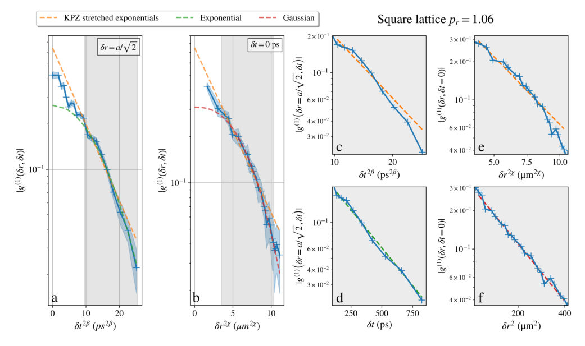
<figcaption class="paper-figure-caption"><b>Fig 1.</b> FIG. 1. Experimental data for the first-order correlation used in Fig. 2C and Fig. 3A of Ref. [1], obtained on a square lattice and for pr = 1.06. a Semi-logarithmical plot of the measured |g1(|δr| = a/ √</figcaption>
</figure>
<figure class="paper-figure-card">
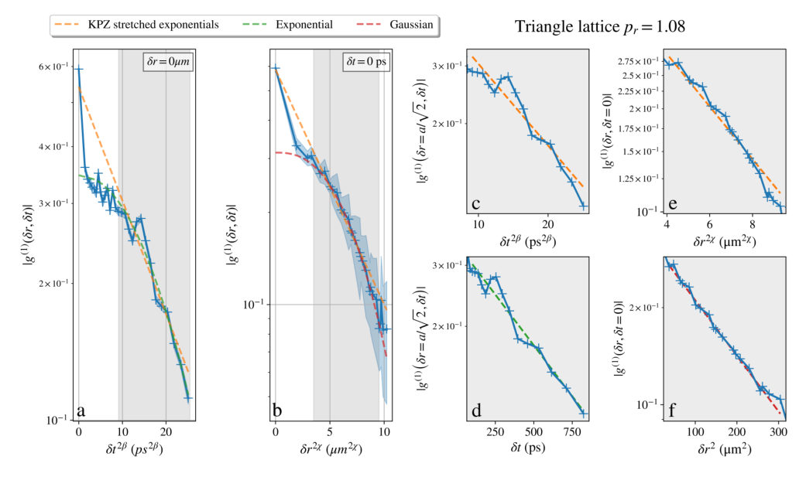
<figcaption class="paper-figure-caption"><b>Fig 2.</b> FIG. 2. Experimental data for the first-order correlation used in Fig. 3b of Ref. [1], obtained on a triangular lattice and for pr = 1.07. a Semi-logarithmical plot of the measured |g1(|δr| = a/ √</figcaption>
</figure>
<figure class="paper-figure-card">
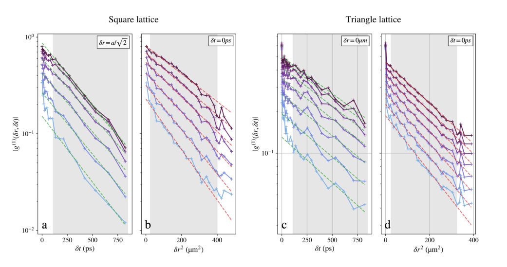
<figcaption class="paper-figure-caption"><b>Fig 3.</b> FIG. 3. Experimental data for the first-order correlation used in Fig. 2C and Fig. 3 of Ref. [1]. a and b: data for the square lattice and for pumping rates pr = {1.042, 1.061, 1.079, 1.094, 1.11, 1.12} (from light blue to dark violet) as a function of a δt for δr = a/ √</figcaption>
</figure>
<figure class="paper-figure-card">
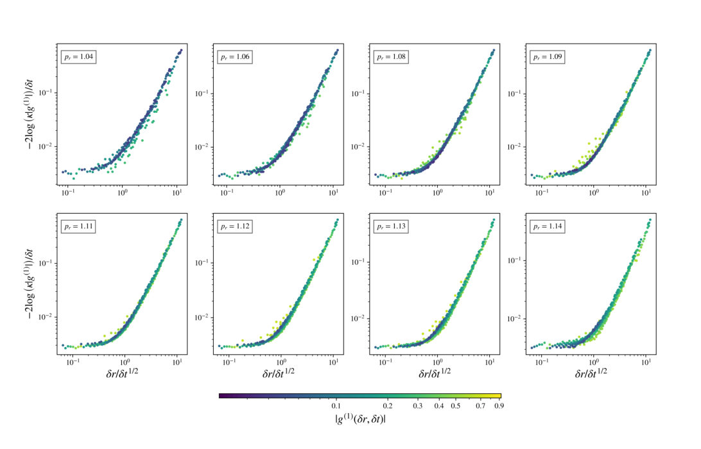
<figcaption class="paper-figure-caption"><b>Fig 4.</b> FIG. 4. Data collapse of the full space-time map of the first-order correlation function measured on the square lattice using β = 0.5 and χ = 1 and for increasing pumping rates from top left to bottom right. The colorscale indicates coherence, from yellow (high coherence) to blue (low coherence).</figcaption>
</figure>
<figure class="paper-figure-card">
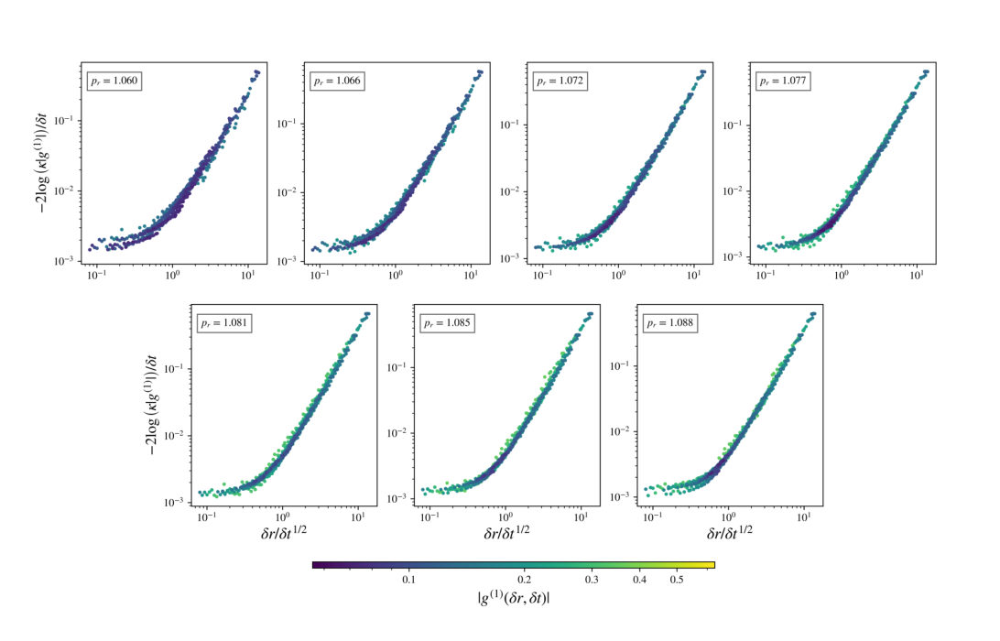
<figcaption class="paper-figure-caption"><b>Fig 5.</b> FIG. 5. Data collapse of the full space-time map of the first-order correlation function measured on the triangular lattice using β = 0.5 and χ = 1 and for increasing pumping rates from top left to bottom right. The colorscale indicates coherence, from yellow (high coherence) to blue (low coherence).</figcaption>
</figure>
</div>

<p><strong>Summary.</strong> The paper critically re-examines claims of KPZ universal scaling observed in the coherence decay of a 2D polariton condensate. By re-analyzing the interferometry data, the authors argue that the apparent KPZ collapse is due to improper data normalization. They conclude that the decay is more accurately modeled by a simple exponential time decay and Gaussian spatial decay.</p>
<p><strong>Why it may be interesting.</strong> This is highly relevant as it deals with non-equilibrium dynamics and universal scaling in interacting quantum systems (polaritons), directly challenging established theoretical interpretations of experimental data in AMO/Quantum Optics.</p>
<details>
<summary>Detailed structure</summary>
<p><strong>Main problem.</strong> The paper challenges a claim of Kardar–Parisi–Zhang (KPZ) universal scaling observed in the spatio-temporal coherence decay of a 2D polariton condensate.</p>
<p><strong>Main result.</strong> Re-analysis shows that the data collapse is better described by an exponential decay in time and Gaussian decay in space, suggesting the original KPZ claim was an artifact of incorrect data normalization.</p>
<p><strong>Method.</strong> The authors re-analyzed interferometry experimental data on both square and triangular lattices, comparing fits to KPZ scaling theory against a simple exponential-Gaussian model using data collapse techniques.</p>
<p><strong>Model / system.</strong> The physical system is a two-dimensional polariton condensate generated in an array of coupled resonators. The analysis focuses on the decay of the first-order correlation function, g(1)(delta r, delta t).</p>
<p><strong>Key observables.</strong> First-order coherence function, |g(1)|, measured as a function of spatial separation (delta r) and time delay (delta t).</p>
<p><strong>Important parameters / regimes.</strong> Excitation power, lattice geometry (square/triangular), and the exponents used in scaling laws (e.g., beta=0.5, chi=1 vs. KPZ values).</p>
<p><strong>Assumptions / limitations.</strong> The analysis assumes that proper normalization ($\kappa$) is crucial for correctly identifying the underlying physical decay mechanism.</p>
<p><strong>Figures summary.</strong> Figures compare data fits on square and triangular lattices, showing systematic agreement with exponential-Gaussian models while demonstrating how incorrect normalization can force a misleading collapse onto KPZ scaling functions.</p>
<p><strong>Paper structure.</strong> The paper follows a structure of critique: first, identifying the claim in prior work; second, re-analyzing the raw data using multiple fitting frameworks (KPZ vs. Exponential-Gaussian); and finally, quantitatively demonstrating that the simpler model provides a superior fit across all tested regimes.</p>
</details>
<details>
<summary>Abstract</summary>
<p>In their paper published in Science 392, 221 (2026), Widmann and collaborators reported interferometry experiments to explore the emission coherence decay of a two-dimensional polariton condensate generated in an array of coupled resonators. The authors claim evidence of Kardar--Parisi--Zhang (KPZ) universal scaling in the measured spatio-temporal coherence decay. We argue in the following that the data were not properly analyzed. We re-analyze the experimental data acquired both with the square and the triangular lattices for various values of the excitation power. Instead of stretched exponential decays, in the space (time) windows considered in the paper we find that the measured $|g^{(1)}(δ{\bf r}, δt)|$ at $δt=0$ ($|δ{\bf r}| $ close to $0$) rather show Gaussian (exponential) decay for all excitation powers. As a result, using as temporal and spatial exponents $β=0.5$ and $χ=1$, the data for all pump powers are found to collapse onto a single curve, which is not the KPZ scaling function. In particular, we show that the data collapse onto the KPZ scaling function presented in the paper is an artifact stemming from incorrect data normalization. We thus conclude that the main claim of the paper is not justified as the spatio-temporal decays of the coherence over the space-time windows analyzed in the paper are not well described by the KPZ universal behavior.</p>
</details>
<p><sub><a href="#top">↑ back to top</a></sub></p>

<p><a id="paper-2607.23871"></a></p>
<h3 id="entanglement-transitions-and-multifractality-in-monitored-free-fermions-with-random-long-range-hopping"><a href="http://arxiv.org/abs/2607.23871v1">Entanglement transitions and multifractality in monitored free-fermions with random long-range hopping</a></h3>
<p><strong>Authors:</strong> Bo Fan, Antonio M. García-García<br>
<strong>Type:</strong> theory · <strong>Category:</strong> statistical mechanics · <strong>PDF:</strong> <a href="https://arxiv.org/pdf/2607.23871v1">https://arxiv.org/pdf/2607.23871v1</a><br>
<strong>Analysis basis:</strong> full PDF text, analyzed in chunks
<strong>Topic relevance:</strong> 🔥 <code>measurement-induced transitions</code> <strong>5/5</strong> · 🔥 <code>entanglement &amp; information structure</code> <strong>4/5</strong> · 🔥 <code>quantum measurements</code> <strong>4/5</strong> · <code>correlated / nonlocal dissipation</code> <strong>3/5</strong> · <code>driven-dissipative phase transition</code> <strong>3/5</strong> · <code>methods for driven-dissipative</code> <strong>3/5</strong> · <code>non-equilibrium universality</code> <strong>3/5</strong> · <code>non-equilibrium dynamics</code> <strong>2/5</strong> · <code>Keldysh / 2PI / non-Gaussian methods</code> <strong>1/5</strong> · <code>Kondo &amp; dissipative impurity</code> <strong>1/5</strong> · <code>analog quantum simulation</code> <strong>1/5</strong></p>
<div class="figure-strip-hint">↔ Scroll figures horizontally</div>
<div class="paper-figures-scroll">
<figure class="paper-figure-card">
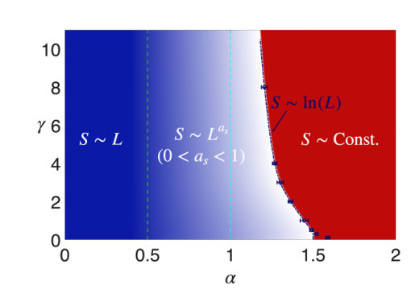
<figcaption class="paper-figure-caption"><b>Fig 1.</b> Figure 1. Phase diagram showing the scaling of the steady-state entanglement entropy S with system size L, as a function of the power-law hopping exponent α and the monitoring strength γ. For α ≲1, the EE exhibits sub-volume-law scaling, S ∝Las with 0 &lt; as &lt; 1 for any γ, and tends towards as →1, volume law, for α ≲1/2. For α &gt; 3/2, the system is in the area-law phase, as = 0 for any finite monitoring strength γ &gt; 0, while in the region 1 &lt; α ≲3/2, it experiences a line of MIPT (navy dash-dotted line) between sub-volume-law and area-law phases at αc(γ). At this critical point, the EE scales logarithmically, S ∝ln(L), and certain correlation functions become multifrac- tal, see Fig. 7....</figcaption>
</figure>
<figure class="paper-figure-card">
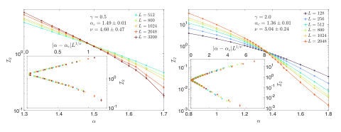
<figcaption class="paper-figure-caption"><b>Fig 2.</b> Figure 2. The mutual information I2 Eq. (6) as a function of α for γ = 0.5 (left) and γ = 2.0 (right). The sharp crossing at α = αc indicates a MIPT, where I2 becomes scale-invariant. The insets show the optimal finite-size data collapse around αc. The esti- mated critical points are αc = 1.49±0.01 and αc = 1.36±0.01 for γ = 0.5 and 2.0, respectively. The critical exponent ν ex- hibits larger fluctuations, due to the absence of a well-defined uni- versal critical exponent in the model we are considering. Results for additional values of γ are presented in Appendix B, Fig. 12.</figcaption>
</figure>
<figure class="paper-figure-card">
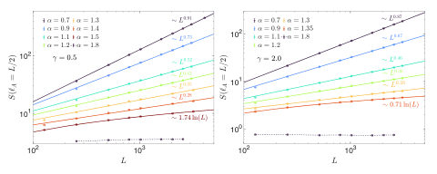
<figcaption class="paper-figure-caption"><b>Fig 3.</b> Figure 4. Steady-state entanglement entropy S(ℓA = L/2) Eq. (5) as a function of the system size L for γ = 0.5 (left) and γ = 2.0 (right), and different power-law exponents α. Fits to a power-law growth S ∼Las(α) reveal a gradual increase of as with increasing α. For weak monitoring γ = 0.5, the system transits from as ≈1 (volume-law) for small α to a logarithmic growth α ≈3/2, and finally to an area-law phase for sufficiently large α (α = 1.8). The difference between weak and strong monitoring is that both the logarithmic growth, and the area-law phase occur at a slightly smaller α. These results are consistent with the mutual information analysis depicted in Fig. 2.</figcaption>
</figure>
<figure class="paper-figure-card">
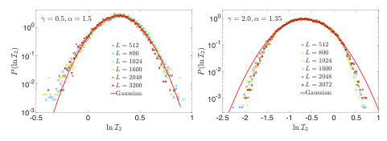
<figcaption class="paper-figure-caption"><b>Fig 4.</b> Figure 3. The probability distribution of the mutual information ln I2 Eq. (6) for different system size L around the MIPT. Left: γ = 0.5, αc = 1.5. Right: αc = 1.35, γ = 2.0. The distribution P(ln I2) is size independent, consistent with the scale invariance of I2 at the transition. The tails of P(ln I2) deviate from a Gaus- sian form, especially in the strong measurement limit γ = 2.</figcaption>
</figure>
<figure class="paper-figure-card">
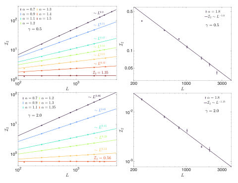
<figcaption class="paper-figure-caption"><b>Fig 5.</b> Figure 5. Scaling of the mutual information I2 with system size L for γ = 0.5 (Upper panel) and γ = 2.0 (Lower panel), and different values of α. For sufficiently small α, I2 ∼Lap with 0 &lt; ap ≤1. At the MIPT α = αc, I2 is scale-invariant, and I2 decays as a power-law in the area-law phase. These results are consistent with the αc obtained in Fig. 2 using the MI and also with those for the EE in Fig. 4.</figcaption>
</figure>
</div>

<p><strong>Summary.</strong> The research analyzes entanglement dynamics in monitored free fermions with random long-range hopping. It maps out distinct phases based on the hopping decay exponent $\alpha$, identifying a Measurement-Induced Phase Transition (MIPT) at critical points. These transitions are characterized by unique scaling behaviors of entanglement entropy and multifractal properties.</p>
<p><strong>Why it may be interesting.</strong> This work provides concrete examples of non-equilibrium phase transitions (MIPTs) driven by measurement backaction in interacting/disordered quantum systems, which is highly relevant to open quantum system dynamics.</p>
<details>
<summary>Detailed structure</summary>
<p><strong>Main problem.</strong> The study investigates entanglement dynamics and identifies measurement-induced phase transitions (MIPTs) in a system of monitored free fermions with random long-range hopping.</p>
<p><strong>Main result.</strong> The paper establishes distinct scaling regimes for the entanglement entropy based on the hopping decay exponent $\alpha$, revealing an $\alpha$-dependent MIPT where correlation functions exhibit multifractal features at criticality.</p>
<p><strong>Method.</strong> The analysis employs numerical simulations using the Quantum State Diffusion (QSD) protocol, calculating entanglement entropy and mutual information across different disorder realizations.</p>
<p><strong>Model / system.</strong> The system is a one-dimensional chain of non-interacting complex fermions described by a Hamiltonian with random power-law hopping $t_{ij} \propto |i-j|^{-2\alpha}$. The dynamics are governed by continuous monitoring via the QSD protocol.</p>
<p><strong>Key observables.</strong> Entanglement Entropy (EE), Mutual Information ($I_2$), and the density-density correlation function, analyzed for their scaling with system size $L$.</p>
<p><strong>Important parameters / regimes.</strong> The decay exponent $\alpha$ of the hopping terms, and the measurement strength $\gamma$ (monitoring strength).</p>
<p><strong>Assumptions / limitations.</strong> The QSD protocol is used to model the monitoring process, which preserves the Gaussian nature of fermionic states.</p>
<p><strong>Figures summary.</strong> Figures summarize the phase diagram showing EE scaling vs. $\alpha$ and $\gamma$, and illustrate $I_2$ crossings and power-law decays of correlation functions across different regimes.</p>
<p><strong>Paper structure.</strong> The paper systematically analyzes how entanglement measures (EE, MI) change as a function of the hopping exponent $\alpha$ and monitoring strength $\gamma$, identifying critical points where scaling laws transition between area-law, sub-volume-law, and logarithmic behavior.</p>
</details>
<details>
<summary>Abstract</summary>
<p>We study the entanglement dynamics of a one-dimensional chain of monitored non-interacting complex fermions with random power-law hopping characterized by a decay exponent $α$. For $α\lesssim 1$, in stark contrast with the case of hopping to nearest neighbors, the scaling of the entanglement entropy (EE) of the steady state with system size $L$ is faster than logarithmic for any monitoring or disorder strength and it tends towards a linear (volume-law) scaling for sufficiently small $α\lesssim 1/2$. For $α> 3/2$, the EE is in the area-law phase, namely, no scaling with $L$, for any monitoring strength. For $1 < α\lesssim 3/2$, we identify an $α$-dependent measurement-induced phase transition (MIPT) at a critical value of the monitoring strength separating the mentioned area-law and sub-volume-law phases. At this critical point, the EE scales logarithmically with system size, and the density-density correlation function, closely related to the EE, exhibits multifractal features. These results highlight the importance of superdiffusive classical hopping in the entanglement dynamic of quantum many-body systems and also help differentiate its role with respect to conventional sources of entanglement such as genuine quantum non-locality.</p>
</details>
<p><sub><a href="#top">↑ back to top</a></sub></p>

<p><a id="paper-2607.24438"></a></p>
<h3 id="quantum-fisher-information-and-imperfect-detection-in-a-monitored-fermion-chain"><a href="http://arxiv.org/abs/2607.24438v1">Quantum Fisher information and imperfect detection in a monitored fermion chain</a></h3>
<p><strong>Authors:</strong> Giovanni Di Fresco, Davide Valenti, Angelo Carollo<br>
<strong>Type:</strong> theory · <strong>Category:</strong> statistical mechanics · <strong>PDF:</strong> <a href="https://arxiv.org/pdf/2607.24438v1">https://arxiv.org/pdf/2607.24438v1</a><br>
<strong>Analysis basis:</strong> full PDF text, analyzed in chunks
<strong>Topic relevance:</strong> 🔥 <code>quantum measurements</code> <strong>5/5</strong> · 🔥 <code>measurement-induced transitions</code> <strong>4/5</strong> · <code>driven-dissipative phase transition</code> <strong>3/5</strong> · <code>methods for driven-dissipative</code> <strong>3/5</strong> · <code>correlated / nonlocal dissipation</code> <strong>2/5</strong> · <code>entanglement &amp; information structure</code> <strong>2/5</strong> · <code>non-equilibrium universality</code> <strong>2/5</strong> · <code>Keldysh / 2PI / non-Gaussian methods</code> <strong>1/5</strong> · <code>Kondo &amp; dissipative impurity</code> <strong>1/5</strong> · <code>analog quantum simulation</code> <strong>1/5</strong> · <code>non-equilibrium dynamics</code> <strong>1/5</strong></p>
<div class="figure-strip-hint">↔ Scroll figures horizontally</div>
<div class="paper-figures-scroll">
<figure class="paper-figure-card">
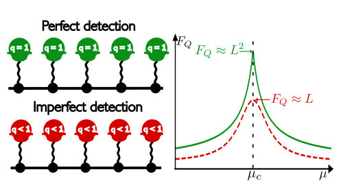
<figcaption class="paper-figure-caption"><b>Fig 1.</b> Figure 1. Schematic illustration of the effect of imperfect detection on the Fisher-information peak near criticality. For perfect detection, q = 1, the Fisher information develops a sharp singular contribution at the critical point µc, solid green line. For imperfect detection, q &lt; 1, this singularity is rounded into a smooth crossover, red dashed line, reflecting the smoothing of the critical mode and the restoration of extensive scaling.</figcaption>
</figure>
<figure class="paper-figure-card">
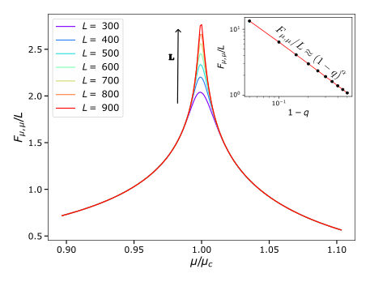
<figcaption class="paper-figure-caption"><b>Fig 2.</b> Figure 2. The main plot shows Fµµ for q = 1 across the critical point, clearly displaying the superextensive peak at criticality. The inset shows the scaling behavior of the Fisher information away from perfect detection on a log-log scale, with a fitted exponent α = −1.095. In these simulations, γ = 1.</figcaption>
</figure>
<figure class="paper-figure-card">
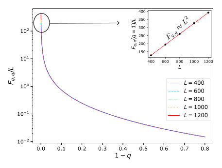
<figcaption class="paper-figure-caption"><b>Fig 3.</b> Figure 3. The main plot shows Fqq as a function of 1 −q, clearly displaying the superextensive peak at q = 1. The inset reports the scaling behavior of Fqq/L at q = 1, revealing its L2 scaling. In these simulations, µ = 0 and γ = 0.3.</figcaption>
</figure>
</div>

<p><strong>Summary.</strong> This paper analyzes the precision limits (QFI) for estimating parameters in a monitored fermion chain when detection is imperfect. It finds that while perfect monitoring leads to super-extensive metrological enhancement near criticality, any finite detection inefficiency smooths out this singularity, reducing the scaling back to an extensive form. This demonstrates that incomplete measurement information fundamentally degrades quantum sensing capabilities.</p>
<p><strong>Why it may be interesting.</strong> It provides a concrete example of how measurement backaction (specifically incomplete information) fundamentally alters quantum metrological bounds in condensed matter systems, offering insights into realistic experimental limitations.</p>
<details>
<summary>Detailed structure</summary>
<p><strong>Main problem.</strong> The study investigates how imperfect detection during continuous monitoring affects the metrological enhancement of a quantum system near criticality.</p>
<p><strong>Main result.</strong> Imperfect detection ($q<1$) rounds the singular, super-extensive Quantum Fisher Information (QFI) seen at perfect detection ($q=1$), restoring only extensive scaling. This shows incomplete information destroys the critical metrological advantage.</p>
<p><strong>Method.</strong> The analysis uses Gaussian dynamics characterized by the fermionic correlation matrix and calculates QFI and mean Uhlmann curvature based on these matrices.</p>
<p><strong>Model / system.</strong> The system is a Kitaev chain undergoing continuous monitoring, conditioned on a no-click record with detector efficiency $q$. The evolution remains Gaussian, allowing characterization via the fermionic correlation matrix $\Gamma$.</p>
<p><strong>Key observables.</strong> Quantum Fisher Information ($F_{Q}$), mean Uhlmann curvature ($U_{\alphaeta}$).</p>
<p><strong>Important parameters / regimes.</strong> Detector efficiency ($q$), chemical potential ($\mu$), monitoring strength ($\gamma$). Key regimes are $q=1$ (perfect) vs. $q<1$ (imperfect).</p>
<p><strong>Assumptions / limitations.</strong> The conditional dynamics remain Gaussian, which is possible because the underlying Hamiltonian and jump operators are quadratic/linear.</p>
<p><strong>Figures summary.</strong> Figure 1 illustrates the QFI peak: a sharp singularity for perfect detection ($q=1$) versus a rounded crossover for imperfect detection ($q<1$). Figure 3 shows $F_{qq}$ scaling, confirming super-extensive behavior at $q=1$.</p>
<p><strong>Paper structure.</strong> The paper analyzes the conditional dynamics using the correlation matrix, deriving QFI and Uhlmann curvature. It contrasts the singular critical structure found for perfect detection with the smoothed crossover observed when detector efficiency is less than one.</p>
</details>
<details>
<summary>Abstract</summary>
<p>We study the metrological properties of a continuously monitored Kitaev chain in the presence of imperfect detection. The system is conditioned on a no-click record, while each emitted fermion is registered only with probability $0\leq q\leq 1$. Because the conditional dynamics remains Gaussian, the steady state is fully characterized by the fermionic correlation matrix. This allows a direct evaluation of the quantum Fisher information and of the mean Uhlmann curvature. For perfect detection, the monitored steady state retains a singular critical structure and the quantum Fisher information with respect to the chemical potential becomes super-extensive. For any $q<1$, imperfect detection introduces a finite smoothing length that rounds the singularity and restores extensive scaling. The detector efficiency behaves instead as a compatible mixed-state estimation parameter, as signaled by the vanishing mean Uhlmann curvature. These results show that incomplete trajectory information destroys the metrological enhancement associated with monitored criticality through a mechanism that differs from ordinary thermal smearing.</p>
</details>
<p><sub><a href="#top">↑ back to top</a></sub></p>

<p><a id="paper-2607.22933"></a></p>
<h3 id="emergent-integrable-dynamics-in-a-non-integrable-rydberg-atom-chain"><a href="http://arxiv.org/abs/2607.22933v1">Emergent integrable dynamics in a non-integrable Rydberg-atom chain</a></h3>
<p><strong>Authors:</strong> Gianluca Morettini, Luca Capizzi, Leonardo Mazza, Maurizio Fagotti<br>
<strong>Type:</strong> theory · <strong>Category:</strong> other · <strong>PDF:</strong> <a href="https://arxiv.org/pdf/2607.22933v1">https://arxiv.org/pdf/2607.22933v1</a><br>
<strong>Analysis basis:</strong> full PDF text, analyzed in chunks
<strong>Topic relevance:</strong> 🔥 <code>Rydberg arrays</code> <strong>5/5</strong> · 🔥 <code>analog quantum simulation</code> <strong>4/5</strong> · <code>entanglement &amp; information structure</code> <strong>3/5</strong> · <code>methods for driven-dissipative</code> <strong>3/5</strong> · <code>non-equilibrium dynamics</code> <strong>3/5</strong> · <code>non-equilibrium universality</code> <strong>2/5</strong> · <code>Frenkel-Kontorova</code> <strong>1/5</strong> · <code>exotic spin models in light-matter</code> <strong>1/5</strong> · <code>scars &amp; prethermalization</code> <strong>1/5</strong></p>
<div class="figure-strip-hint">↔ Scroll figures horizontally</div>
<div class="paper-figures-scroll">
<figure class="paper-figure-card">
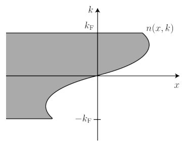
<figcaption class="paper-figure-caption"><b>Fig 1.</b> Figure 1. The local occupation n(x, k) as a function of the po- sition x and the momentum k for t &gt; 0, evolved from the ini- tial condition (8) with the free-fermionic hydrodynamic equa- tion (7). The function n(x, k) equals 1 within the gray regions and 0 otherwise.</figcaption>
</figure>
<figure class="paper-figure-card">
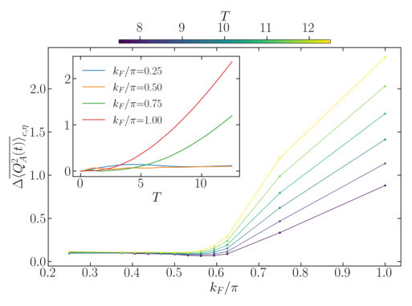
<figcaption class="paper-figure-caption"><b>Fig 2.</b> Figure 3. Difference between the magnetization variance in the presence of the perturbation (at η = 1/8) and in its ab- sence, averaged over the time window t ∈[0, T] and plotted as a function of kF. An inset show the same quantity as a function of T. The parameters are [J, L] = [1, 64].</figcaption>
</figure>
<figure class="paper-figure-card">
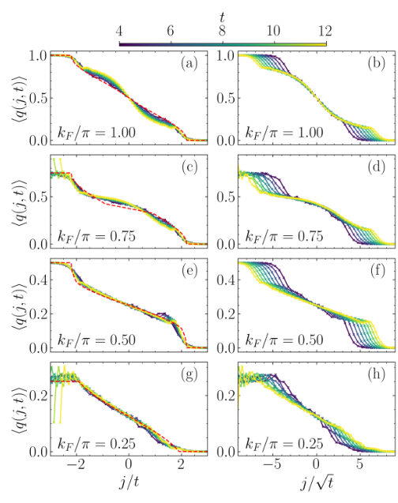
<figcaption class="paper-figure-caption"><b>Fig 3.</b> Figure 2. Spatial profile of the charge density for different values of kF . Left panels: Plot as a function of j/t (bal- listic rescaling); we compare the data with a free fermionic approximation (dashed red line). Right panels: Plot as a function of j/ √</figcaption>
</figure>
<figure class="paper-figure-card">
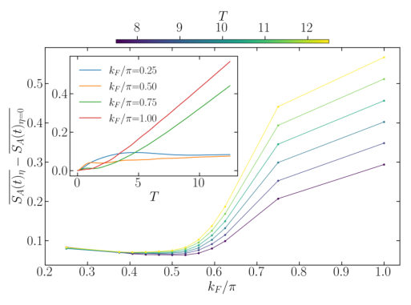
<figcaption class="paper-figure-caption"><b>Fig 4.</b> Figure 5. Difference between the half-chain entropy in the presence of the perturbation (at η = 1/8) and in its absence, averaged over the time window t ∈[0, T] and plotted as a function of kF. An inset shows the same quantity as a function of T. The parameters are [J, L] = [1, 64].</figcaption>
</figure>
<figure class="paper-figure-card">
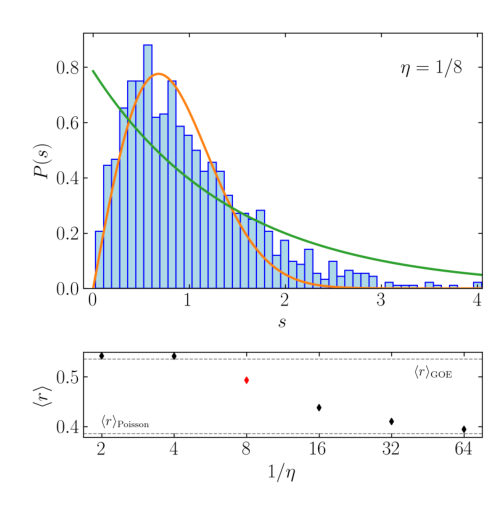
<figcaption class="paper-figure-caption"><b>Fig 5.</b> Figure 4. (a) Level-spacing distribution P(s) of the model for η = 1/8. The curves show fits with the Poisson distribu- tion (green) and with the Wigner-Dyson distribution expected from the GOE (orange). (b) Average ratio ⟨r⟩as a function of 1/η. The red point highlights the value corresponding to η = 1/8. Data are obtained from exact diagonalization with parameters [J, L] = [1, 16], in the zero-magnetization sector and within the (I, F) = (1, 1) symmetry sectors.</figcaption>
</figure>
</div>

<p><strong>Summary.</strong> The paper investigates a Rydberg-atom chain to demonstrate that whether its dynamics are integrable or non-integrable depends not only on the Hamiltonian but crucially on how the system is initially prepared. By analyzing transport and spectral properties, the authors show clear evidence of state-dependent quantum behavior, offering new insights into controlling many-body physics in quantum simulators.</p>
<p><strong>Why it may be interesting.</strong> This work is highly relevant as it tackles the fundamental question of how quantum chaos/integrability emerges in controllable physical platforms like Rydberg arrays. The dependence on initial state provides new control knobs for manipulating quantum dynamics beyond just tuning coupling constants.</p>
<details>
<summary>Detailed structure</summary>
<p><strong>Main problem.</strong> The research investigates how integrable and non-integrable dynamics can coexist within a single quantum many-body system, with the initial state playing a crucial role in determining the emergent behavior.</p>
<p><strong>Main result.</strong> Integrability breaking is not solely determined by the Hamiltonian or coupling strength but critically depends on the specific initial state preparation of the system. The study finds sharp qualitative transitions in transport properties based on particle density.</p>
<p><strong>Method.</strong> The authors employ theoretical mapping to effective integrable Fermi gases, coupled with numerical simulations using techniques like MPS Itensors and analyzing quantum signatures such as level spacing statistics and entanglement entropy growth.</p>
<p><strong>Model / system.</strong> The system is a Rydberg-atom chain modeled by an effective dipolar XY Hamiltonian ($H = H_0 + \eta V$). The dynamics are studied in the context of nearest-neighbor interactions (integrable part $H_0$) perturbed by longer-range couplings ($\eta V$), which break conservation laws.</p>
<p><strong>Key observables.</strong> Transport phenomena (ballistic vs. diffusive), variance of half-chain magnetization ($\Delta\langle Q_A^2 
angle_{c,\eta}$), level spacing statistics ($P(s)$), and entanglement entropy growth ($S_A$).</p>
<p><strong>Important parameters / regimes.</strong> Particle density ($
ho$ or $k_F$), the perturbation strength $\eta$, and the initial state preparation protocol (e.g., bipartition).</p>
<p><strong>Assumptions / limitations.</strong> The analysis relies on approximations such as restricting to the perturbative regime ($\eta$ small) for conservation law analysis, and assuming validity of mean-field or specific boundary conditions for simulations.</p>
<p><strong>Figures summary.</strong> Figures illustrate the evolution of local occupation profiles showing transitions between ballistic and diffusive scaling based on $k_F$, and show level spacing distributions comparing Poisson (integrable) vs. Wigner-Dyson (non-integrable) statistics.</p>
<p><strong>Paper structure.</strong> The paper progresses by first defining the Hamiltonian and mapping it to an effective model, then analyzing scattering processes using conservation laws, followed by numerical simulations on a bipartition protocol that reveals state-dependent dynamics, and concluding with diagnostics like level spacing and entropy growth.</p>
</details>
<details>
<summary>Abstract</summary>
<p>We show that integrable and non-integrable dynamics can coexist in the same Rydberg-atom chain, depending on the initial state in which the system is prepared. In the setting we consider, Rydberg atoms mainly experience an effective dipolar interaction and, within the nearest-neighbor approximation, their dynamics can be mapped onto an effective integrable Fermi gas with ballistic transport. The inclusion of longer-range couplings, however, is essential for the theory to be predictive; those terms break the conservation laws associated with integrability, enabling, in particular, the emergence of genuine diffusive transport. We study the dynamics generated by a bipartition protocol and reveal a sharp qualitative change in behavior as the particle density is varied, suggesting the possibility of accessing weaker and stronger integrability breaking dynamics in the same Hamiltonian depending on the relevance of local interactions. We propose a theoretical mechanism that accounts for the differences. Our findings provide clear and concrete evidence that integrability breaking is not solely a property of the Hamiltonian and of the magnitude of the couplings that break integrability, but also of the state in which the system is prepared.</p>
</details>
<p><sub><a href="#top">↑ back to top</a></sub></p>

<p><a id="paper-2607.24078"></a></p>
<h3 id="thermodynamics-with-thermodynamic-variable-first-passage-time-i-from-stochastic-trajectories-to-nonlinear-transport-equations"><a href="http://arxiv.org/abs/2607.24078v1">Thermodynamics with thermodynamic variable first-passage time. I. From stochastic trajectories to nonlinear transport equations</a></h3>
<p><strong>Authors:</strong> V. V. Ryazanov<br>
<strong>Type:</strong> theory · <strong>Category:</strong> statistical mechanics · <strong>PDF:</strong> <a href="https://arxiv.org/pdf/2607.24078v1">https://arxiv.org/pdf/2607.24078v1</a><br>
<strong>Analysis basis:</strong> full PDF text, analyzed in chunks
<strong>Topic relevance:</strong> 🔥 <code>non-equilibrium dynamics</code> <strong>5/5</strong> · 🔥 <code>methods for driven-dissipative</code> <strong>4/5</strong> · 🔥 <code>non-equilibrium universality</code> <strong>4/5</strong> · <code>Keldysh / 2PI / non-Gaussian methods</code> <strong>3/5</strong> · <code>driven-dissipative phase transition</code> <strong>3/5</strong> · <code>correlated / nonlocal dissipation</code> <strong>2/5</strong> · <code>quantum measurements</code> <strong>1/5</strong></p>
<div class="figure-strip-hint">↔ Scroll figures horizontally</div>
<div class="paper-figures-scroll">
<figure class="paper-figure-card">
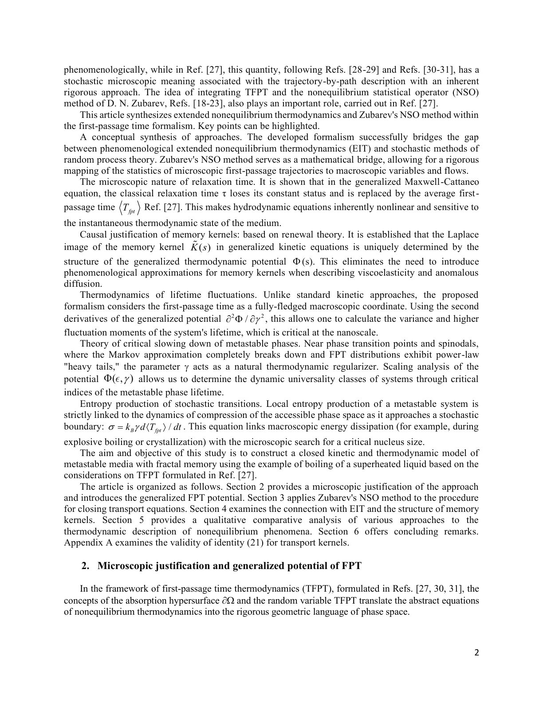
<figcaption class="paper-figure-caption"><b>Fig 1.</b> Low-resolution page preview, page 2</figcaption>
</figure>
<figure class="paper-figure-card">
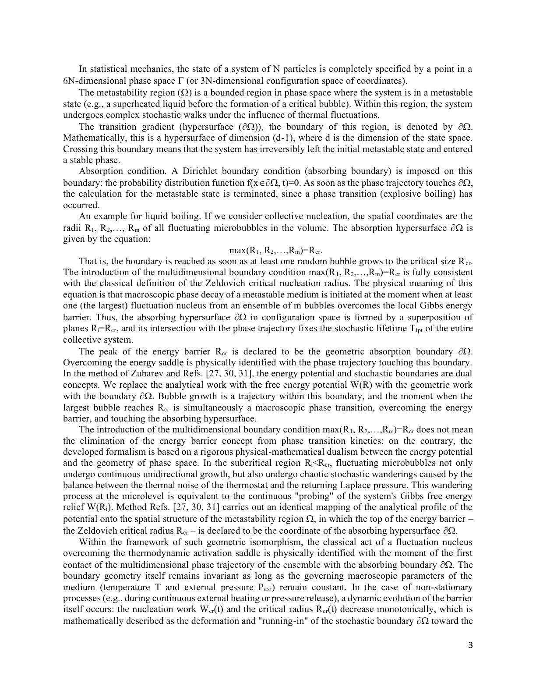
<figcaption class="paper-figure-caption"><b>Fig 2.</b> Low-resolution page preview, page 3</figcaption>
</figure>
<figure class="paper-figure-card">
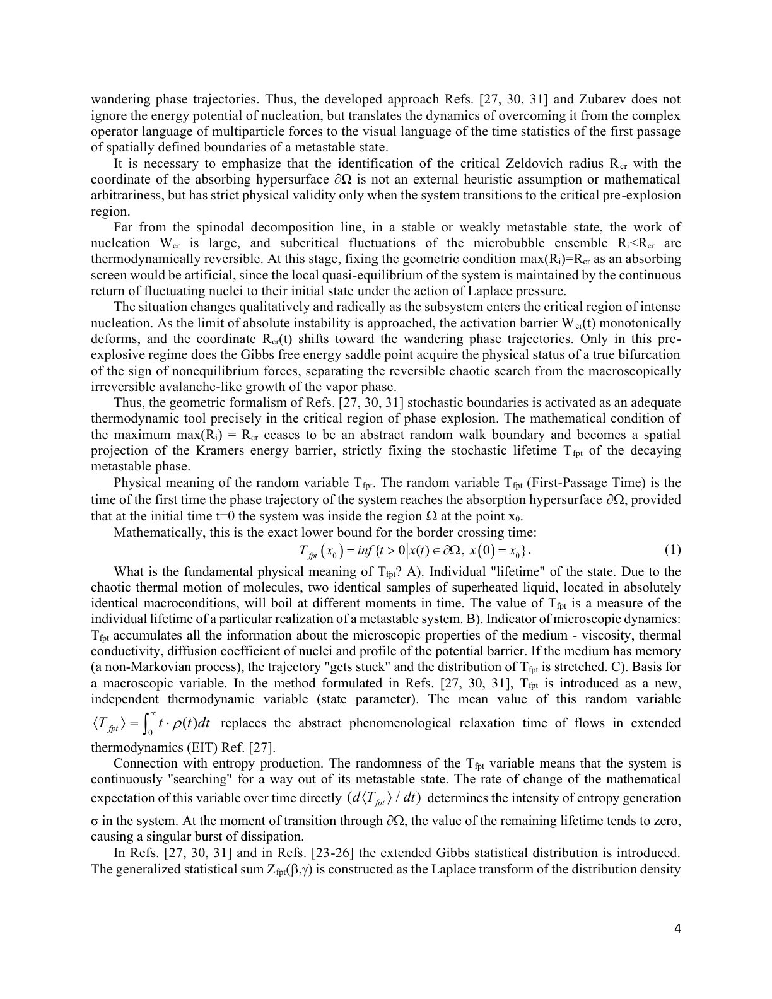
<figcaption class="paper-figure-caption"><b>Fig 3.</b> Low-resolution page preview, page 4</figcaption>
</figure>
<figure class="paper-figure-card">
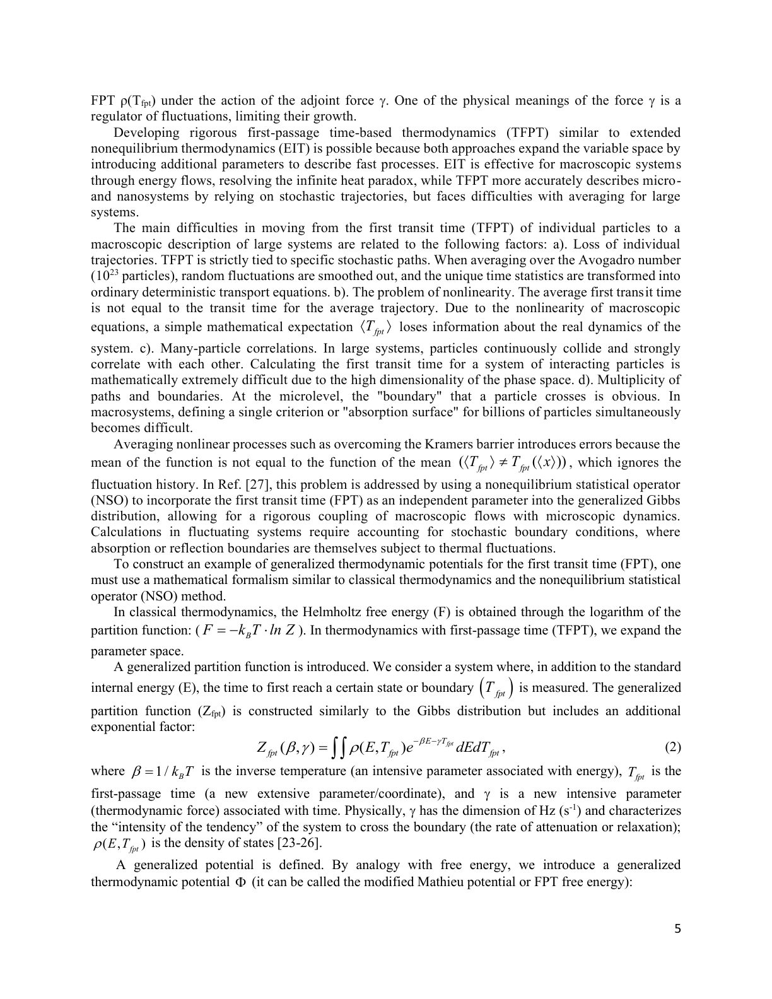
<figcaption class="paper-figure-caption"><b>Fig 4.</b> Low-resolution page preview, page 5</figcaption>
</figure>
<figure class="paper-figure-card">
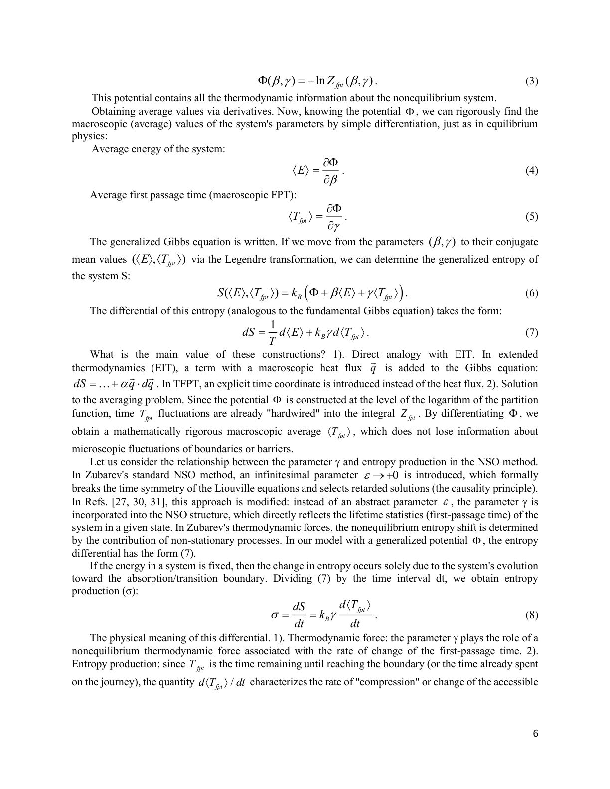
<figcaption class="paper-figure-caption"><b>Fig 5.</b> Low-resolution page preview, page 6</figcaption>
</figure>
</div>

<p><strong>Summary.</strong> This paper develops an advanced thermodynamic theory that treats the time taken to escape a metastable state (First-Passage Time) as a primary thermodynamic variable. It rigorously connects stochastic trajectory statistics to macroscopic transport equations by showing that fluctuation-dissipation theorems uniquely determine memory effects, thereby providing a nonlinear description of non-equilibrium dynamics.</p>
<p><strong>Why it may be interesting.</strong> This work provides a powerful, general framework for understanding how microscopic stochastic dynamics (like crossing an energy barrier) dictates macroscopic transport properties in systems far from equilibrium, which is crucial for modeling complex processes like phase transitions or reaction kinetics.</p>
<details>
<summary>Detailed structure</summary>
<p><strong>Main problem.</strong> To develop a rigorous theoretical framework for nonequilibrium thermodynamics that incorporates the first-passage time (FPT) as an independent, macroscopic thermodynamic variable.</p>
<p><strong>Main result.</strong> The mean FPT replaces classical relaxation times in transport equations, introducing inherent macroscopic nonlinearity. Furthermore, the memory kernel governing non-Markovian processes is uniquely determined by the microscopic statistics of state lifetimes via fluctuation-dissipation relations.</p>
<p><strong>Method.</strong> The authors combine Nonequilibrium Statistical Operator (NSO) methods with renewal theory and generalized thermodynamic potential constructions to bridge stochastic trajectory dynamics to macroscopic transport equations.</p>
<p><strong>Model / system.</strong> The study models metastable systems undergoing phase transitions, such as superheated liquid boiling or nucleation processes. The system's evolution is analyzed in a high-dimensional phase space ($\Gamma$) relative to an absorbing boundary ($\partial\Omega$).</p>
<p><strong>Key observables.</strong> First-Passage Time ($  ext{T}_{    ext{FPT}}$), Generalized Thermodynamic Potential ($\Phi$), Macroscopic Memory Kernel ($K(t)$), and Entropy Production ($\sigma$).</p>
<p><strong>Important parameters / regimes.</strong> The mean first passage time $\langle 	ext{T}_{	ext{fpt}} 
angle$ acts as a key macroscopic parameter, replacing the classical relaxation time $   au$. The system is analyzed near critical points where barrier deformation occurs.</p>
<p><strong>Assumptions / limitations.</strong> The central assumption is that FPT can be treated as a fully-fledged macroscopic coordinate. Consistency requires satisfying fluctuation-dissipation relations and assuming Bogolyubov's timescale separation.</p>
<p><strong>Figures summary.</strong> Not specified by the notes, but the structure implies derivations relating potential functions ($\Phi$) to time statistics ($P(t)$) and memory kernels ($K(t)$).</p>
<p><strong>Paper structure.</strong> The paper progresses from establishing the theoretical foundation (bridging EIT/NSO with FPT), deriving generalized potentials using stochastic methods, and finally enforcing thermodynamic consistency by showing that fluctuation-dissipation theorems uniquely determine the non-Markovian transport memory kernels.</p>
</details>
<details>
<summary>Abstract</summary>
<p>The theoretical foundation of combining external nonequilibrium thermodynamics, the nonequilibrium statistical operator method, and stochastic first passage time thermodynamics are explored. It is shown that including a random lifetime of a metastable state in the generalized distribution function allows the first passage time to be considered as a fully - fledged macroscopic coordinate. A microscopic justification for this approach is provided, and a generalized thermodynamic potential is introduced. A procedure for closing the transport equations based on on thermodynamic consistency conditions is developed. It is shown that in the generalized Maxwell - Catteneo equation, the classical relaxation time is strictly replaced by the mean first passage time, which imparts internal macroscopic nonlinearity to the system. Using renewal theory, the exact mathematical structure of transport memory kernels for non-Markovian processes is derived. A qualitative comparative analysis of various approaches to the thermodynamic description of nonequilibrium phenomena is presented.</p>
</details>
<p><sub><a href="#top">↑ back to top</a></sub></p>

<p><a id="paper-2607.23529"></a></p>
<h3 id="single-aperture-dual-color-ion-addressing-with-a-duv-compatible-bilayer-grating"><a href="http://arxiv.org/abs/2607.23529v1">Single-Aperture Dual-Color Ion Addressing with a DUV-Compatible Bilayer Grating</a></h3>
<p><strong>Authors:</strong> Gyanendra Yadav<br>
<strong>Type:</strong> both · <strong>Category:</strong> other · <strong>PDF:</strong> <a href="https://arxiv.org/pdf/2607.23529v1">https://arxiv.org/pdf/2607.23529v1</a><br>
<strong>Analysis basis:</strong> full PDF text, analyzed in chunks
<strong>Topic relevance:</strong> 🔥 <code>QC/QI experiment</code> <strong>5/5</strong> · 🔥 <code>analog quantum simulation</code> <strong>4/5</strong> · <code>interference shaping light</code> <strong>3/5</strong> · <code>quantum optics experiment</code> <strong>3/5</strong> · <code>Tavis-Cummings &amp; cavity-many-emitter</code> <strong>1/5</strong> · <code>correlated cavity matter</code> <strong>1/5</strong></p>
<div class="figure-strip-hint">↔ Scroll figures horizontally</div>
<div class="paper-figures-scroll">
<figure class="paper-figure-card">
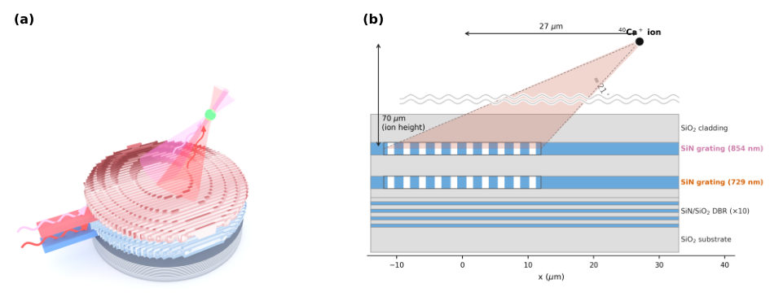
<figcaption class="paper-figure-caption"><b>Fig 1.</b> Figure 1: Inverse-designed bilayer coupler co-focusing two wavelengths onto one ion. (a) Three- dimensional rendering of the featured dual-color DUV design, generated from its simulated height maps: the two stacked, multi-level-apodized SiN gratings launch their guided modes into converging free-space beams that co-focus on a single 40Ca+ ion; the concentric surface relief is the confocal (astigmatic) tooth curvature. The render uses artistic cropping to a disc and an exaggerated vertical relief for visibility; the true aperture is 24 × 24 µm square and the reflector has ten SiN/SiO2 pairs. (b) Side view of the stratified stack: a shared buried SiN/SiO2 distributed Bragg reflector (DBR,...</figcaption>
</figure>
<figure class="paper-figure-card">
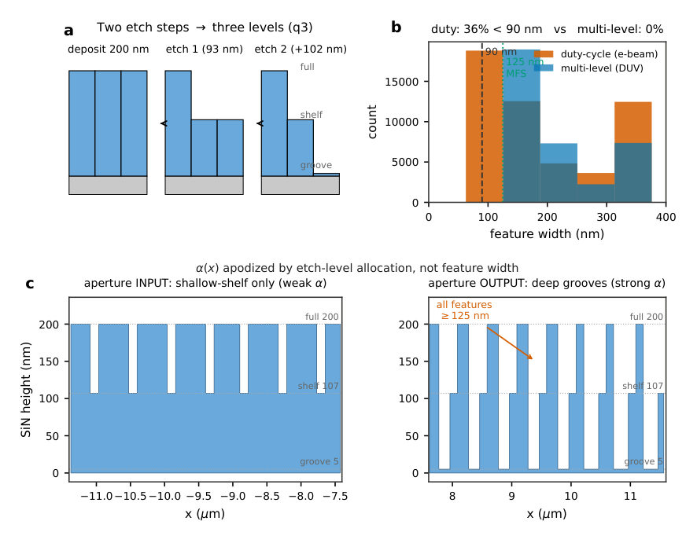
<figcaption class="paper-figure-caption"><b>Fig 2.</b> Figure 2: Multi-level depth-allocation apodization. (a) The two-etch-step q3 process yields three SiN levels (full / shallow shelf / deep groove). (b) Minimum-feature distribution (per-row run-length encoding on the 62.5 nm design grid): the duty-cycle taper (e-beam) puts 36% of features below 90 nm, whereas depth- allocation apodization keeps 0% sub-90 nm. (c) 729 nm cross-section of the featured dual-color DUV design: weakly-coupled input realized by a wide shallow shelf, strong output by deep grooves that grow toward the aperture edge—every feature ≥125 nm. The panels use the simulated height maps of the featured design.</figcaption>
</figure>
<figure class="paper-figure-card">
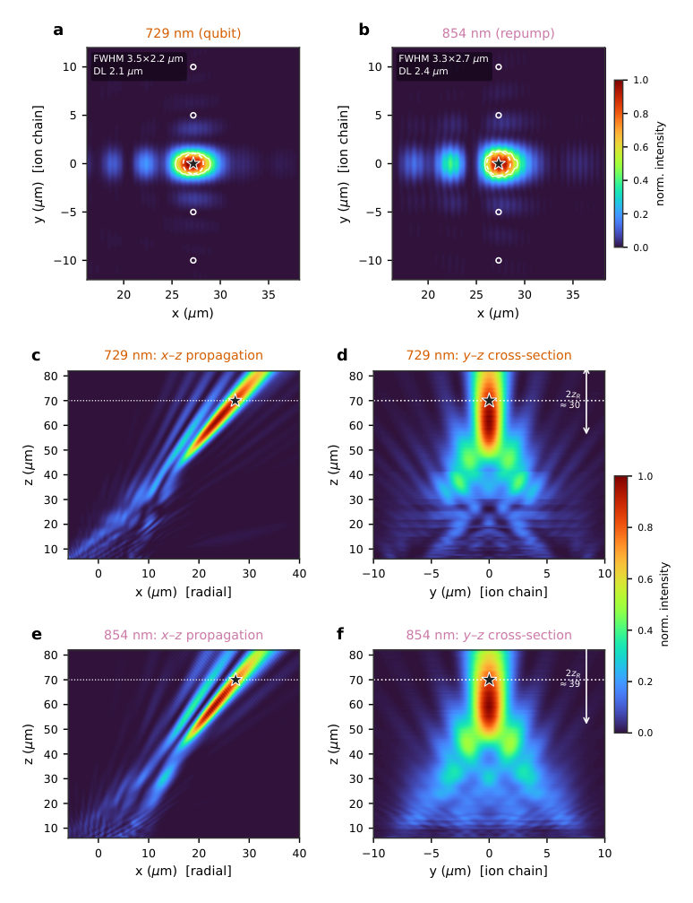
<figcaption class="paper-figure-caption"><b>Fig 3.</b> Figure 3: Co-focused dual-wavelength spots at the ion plane. Primary three-dimensional FDTDX near fields propagated by angular spectrum (the same kernel as the analysis pipeline). (a) 729 nm and (b) 854 nm focal-plane intensity at 70 µm, with the half-maximum contour, the diffraction-limit circle (dashed), the focus (star), and the ±5/ ± 10 µm neighboring ion sites (open circles). (c,d) the 729 nm and (e,f) 854 nm x–z and y–z (ion-chain) beam-axis cross-sections. The low numerical aperture (≈0.18) yields an extended confocal parameter (2zR ≈30 µm), placing the fixed 70 µm ion plane slightly above the design’s absolute 3D beam waist (z ≈58 µm); at this plane the neighboring ion sites fall in...</figcaption>
</figure>
<figure class="paper-figure-card">
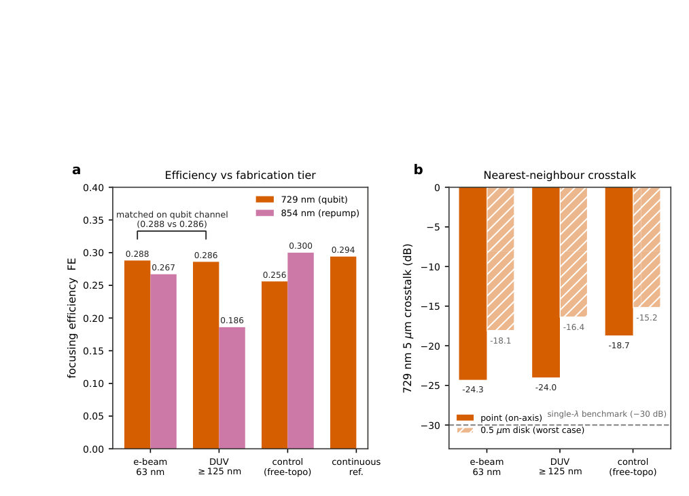
<figcaption class="paper-figure-caption"><b>Fig 4.</b> Figure 4: The realization gap, quantified. (a) Focusing efficiency of both channels across fabrication tiers: on the 729 nm qubit channel the DUV-clean device is indistinguishable from the e-beam device at the common 50 nm reporting grid (0.288 vs 0.286). (b) 729 nm nearest-neighbor (5 µm) crosstalk, point and 0.5 µm-disk worst case, with a representative single-wavelength benchmark (−30 dB; demonstrated integrated-photonic addressing crosstalk reaches −40 to ≤−50 dB [31, 35]). The corresponding single-qubit gate-error figure of merit is given in §2.6. All values are the verified device-table numbers.</figcaption>
</figure>
<figure class="paper-figure-card">
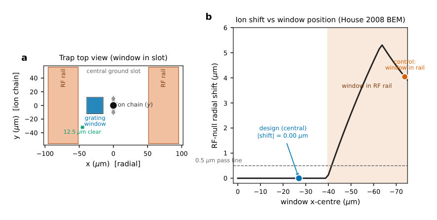
<figcaption class="paper-figure-caption"><b>Fig 5.</b> Figure 5: Trap integration. (a) Trap top view: the outcoupling window sits in the central RF-quiet ground slot, 27 µm off-axis, clear of the RF rails. (b) RF-null radial shift vs. window position from a gapless surface-electrode boundary-element model [36]. The ion is unshifted while the window stays in the field-free ground slot—where a grounded aperture leaves the RF potential unchanged by construction—and the shift rises only when the window is displaced into an RF rail (the computed clearance control).</figcaption>
</figure>
</div>

<p><strong>Summary.</strong> This paper presents a novel approach to overcome the area limitations of multi-wavelength optical addressing in trapped-ion quantum computers. By utilizing a vertically stacked silicon-nitride bilayer grating coupler and employing depth-allocation apodization, the authors successfully co-focus two distinct colors onto a single ion while remaining compatible with standard deep-UV lithography rules. This vertical integration transforms wavelength scaling from a lateral area penalty into a manageable layer allocation problem.</p>
<p><strong>Why it may be interesting.</strong> This work directly addresses hardware scalability in quantum computing platforms by proposing a photonic integration technique that decouples wavelength scaling from lateral footprint constraints, which is crucial for realizing complex ion trap architectures.</p>
<details>
<summary>Detailed structure</summary>
<p><strong>Main problem.</strong> Scaling multi-wavelength optical control for trapped-ion quantum computing is bottlenecked by the physical area required for separate surface emitters.</p>
<p><strong>Main result.</strong> A vertically stacked SiN bilayer grating coupler successfully co-focuses two widely separated wavelengths onto a single ion while adhering to strict, deep-UV foundry fabrication rules.</p>
<p><strong>Method.</strong> The authors employ multi-level depth-allocation apodization, encoding the coupling envelope in discrete etch depths rather than relying on minimum feature widths.</p>
<p><strong>Model / system.</strong> The system is a trapped-ion setup using Ca40+ qubits requiring control fields at 729.4 nm and 854.2 nm. The proposed hardware solution is a vertically stacked silicon-nitride bilayer grating coupler integrated over an ion trap.</p>
<p><strong>Key observables.</strong> Focusing efficiency, crosstalk (e.g., -24 dB), color separation ($\approx 0.10 \mu	ext{m}$), and the ability to maintain performance comparable to aggressive electron-beam designs.</p>
<p><strong>Important parameters / regimes.</strong> Wavelengths: 729.4 nm and 854.2 nm; Focusing distance: $70 \mu	ext{m}$; Minimum feature size rule: $\ge 125 	ext{ nm}$.</p>
<p><strong>Assumptions / limitations.</strong> The technique assumes the availability of a discrete multi-level (qn) platform with sufficient etch-depth contrast for apodization control.</p>
<p><strong>Figures summary.</strong> Figures illustrate the 3D rendering of the dual-color design, side views of the stratified stack, and comparisons between standard duty-cycle apodization versus the proposed depth-allocation method.</p>
<p><strong>Paper structure.</strong> The paper first establishes the scaling bottleneck in trapped-ion optics. It then details the novel multi-level depth-allocation grating structure using a SiN bilayer. Performance is validated via 3D FDTD and Lumerical simulations, comparing results against ideal e-beam designs and analyzing focus stability under fabrication tolerances.</p>
</details>
<details>
<summary>Abstract</summary>
<p>Multi-wavelength optical control is a scaling bottleneck for trapped-ion hardware: separate surface emitters consume trap area, interrupt the electrode plane, and expose charge-sensitive dielectric near the ions. Here, a vertically stacked silicon-nitride bilayer routes the $^{40}\text{Ca}^+$ qubit and repump fields-729.4 and 854.2 nm-through one electrode aperture and focuses them $70~μ\text{m}$ above the chip. Three-dimensional FDTDX predicts $0.10~μ\text{m}$ color separation and near-diffraction-limited spots along the ion-chain axis. Multi-level depth-allocation apodization enables this architecture by encoding the coupling envelope in discrete etch levels rather than sub-resolution linewidths. Every feature satisfies a strict $\ge 125\text{ nm}$ deep-UV rule using two etch depths per film. Full-3D Ansys Lumerical simulations independently corroborate directionality, spot size, and repump efficiency. At a common 50 nm reporting grid, the DUV-compatible device matches a 63 nm electron-beam design on the qubit channel (focusing efficiency 0.286 vs 0.288; crosstalk -24.0 vs -24.3 dB). Vertical integration therefore converts wavelength scaling from a lateral-footprint penalty into a layer-allocation problem, providing a pathway toward compact multi-color photonic interfaces for trapped ions and other chip-addressed quantum emitters.</p>
</details>
<p><sub><a href="#top">↑ back to top</a></sub></p>

<p><a id="paper-2607.22990"></a></p>
<h3 id="phonon-heat-transport-with-squeezing-based-symmetry-breaking"><a href="http://arxiv.org/abs/2607.22990v1">Phonon heat transport with squeezing-based symmetry breaking</a></h3>
<p><strong>Authors:</strong> Yan Cao, Cheng Yang, Xintong Gu, Shenzhu Wang, Jiteng Sheng, Haibin Wu<br>
<strong>Type:</strong> both · <strong>Category:</strong> statistical mechanics · <strong>PDF:</strong> <a href="https://arxiv.org/pdf/2607.22990v1">https://arxiv.org/pdf/2607.22990v1</a><br>
<strong>Analysis basis:</strong> full PDF text, analyzed in chunks
<strong>Topic relevance:</strong> 🔥 <code>analog quantum simulation</code> <strong>4/5</strong> · 🔥 <code>non-equilibrium dynamics</code> <strong>4/5</strong> · <code>correlated / nonlocal dissipation</code> <strong>3/5</strong> · <code>correlated cavity matter</code> <strong>3/5</strong> · <code>driven-dissipative phase transition</code> <strong>3/5</strong> · <code>entanglement &amp; information structure</code> <strong>3/5</strong> · <code>methods for driven-dissipative</code> <strong>3/5</strong> · <code>Keldysh / 2PI / non-Gaussian methods</code> <strong>2/5</strong> · <code>non-equilibrium universality</code> <strong>2/5</strong> · <code>quantum optics experiment</code> <strong>2/5</strong> · <code>Tavis-Cummings &amp; cavity-many-emitter</code> <strong>1/5</strong> · <code>quantum measurements</code> <strong>1/5</strong> · <code>scars &amp; prethermalization</code> <strong>1/5</strong></p>
<div class="figure-strip-hint">↔ Scroll figures horizontally</div>
<div class="paper-figures-scroll">
<figure class="paper-figure-card">
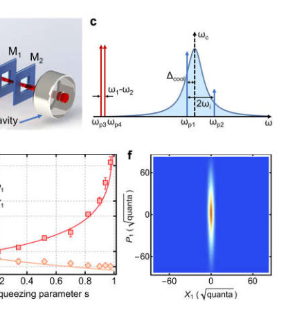
<figcaption class="paper-figure-caption"><b>Fig 1.</b> Fig. 1. Experimental setup and characterization of the two-membrane cavity</figcaption>
</figure>
<figure class="paper-figure-card">
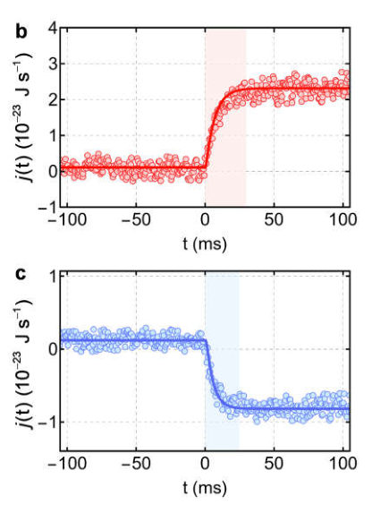
<figcaption class="paper-figure-caption"><b>Fig 2.</b> Fig. 2. Observations of squeezing-engineered phonon heat current. a, Measured</figcaption>
</figure>
<figure class="paper-figure-card">
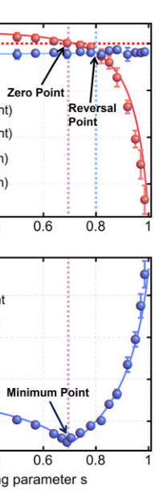
<figcaption class="paper-figure-caption"><b>Fig 3.</b> Fig. 3. Correspondence between heat channels and quantum discord. a, b, Heat</figcaption>
</figure>
<figure class="paper-figure-card">
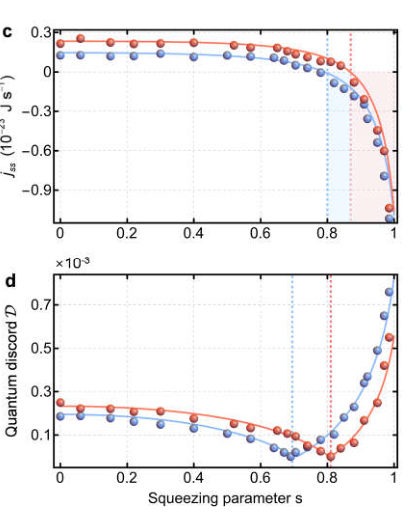
<figcaption class="paper-figure-caption"><b>Fig 4.</b> Fig. 4. Controllability of squeezing-engineered phonon heat transport. a, b, Steady-</figcaption>
</figure>
</div>

<p><strong>Summary.</strong> The authors demonstrate that applying phonon squeezing in an optomechanical cavity allows for unprecedented, active control over heat flow in solid-state systems. By breaking the system's continuous symmetry, they can deterministically amplify or reverse heat currents under a constant temperature gradient. This establishes quantum squeezing as a powerful tool for realizing programmable thermal management in future quantum technologies.</p>
<p><strong>Why it may be interesting.</strong> This work directly addresses non-equilibrium thermodynamics in a quantum setting by using engineered quantum states (squeezing) to manipulate energy transport, which is highly relevant for understanding thermalization and heat management in nanoscale quantum devices.</p>
<details>
<summary>Detailed structure</summary>
<p><strong>Main problem.</strong> The core challenge is achieving on-demand, real-time control over phonon heat flow, which is typically constrained by the temperature gradient.</p>
<p><strong>Main result.</strong> Phonon squeezing breaks system symmetry, enabling deterministic amplification, reduction, or even reversal of heat flow with high efficiency within milliseconds.</p>
<p><strong>Method.</strong> The study uses quantum mechanical modeling (Hamiltonians and Langevin equations) combined with experimental measurements to diagnose thermal transport properties.</p>
<p><strong>Model / system.</strong> The platform is a cavity optomechanical system coupling two nanomechanical resonators ($    ext{M1}$ and $  ext{M2}$) cooled near their ground states. The dynamics are governed by an effective Hamiltonian incorporating squeezing terms and coherent coupling.</p>
<p><strong>Key observables.</strong> Phonon heat currents ($j_{ss}$, $j_{	ext{transient}}$), quantum discord ($\Delta$), and quadrature variances.</p>
<p><strong>Important parameters / regimes.</strong> Squeezing parameter ($s$), temperature gradient ($\Delta T$), and coupling strength ($\eta/	ext{2}\pi$).</p>
<p><strong>Assumptions / limitations.</strong> The system is assumed to be cooled to near ground states, allowing quantum effects like squeezing to dominate the thermal dynamics.</p>
<p><strong>Figures summary.</strong> Figures illustrate the setup (Fig. 1), show steady-state heat current dependence on squeezing (Fig. 2), and correlate heat channels with quantum discord (Fig. 3).</p>
<p><strong>Paper structure.</strong> The paper establishes the problem of phonon control, introduces the optomechanical system and squeezing mechanism that breaks U(1) symmetry, details measurements showing controllable heat flow reversal/amplification, and finally links this anomalous transport to measurable quantum correlations like quantum discord.</p>
</details>
<details>
<summary>Abstract</summary>
<p>The controllability of phonon thermal transport is fundamental for numerous technologies, from cooling high-performance chips to managing heat in quantum computing. Despite extensive efforts, on-demand, real-time control of phonon heat flow remains elusive, being fundamentally constrained by the temperature gradient. Here we achieve this long-sought phonon heat transport by introducing a novel mechanism using quantum squeezing in a cavity optomechanical system. We find that phonon squeezing of near-ground-state mechanical resonators via an optomechanically induced parametric process breaks the continuous U(1) rotation symmetry in phase space, and consequently the symmetry in the heat current structure. We reveal that heat flow under a constant temperature gradient can be deterministically amplified, reduced, or even reversed, a capability previously unattainable. With phonon squeezing, we achieve over twentyfold amplification of heat flow and reversal within 30 milliseconds. Importantly, quantum discord analysis reveals a direct connection between heat flow reversal and quantum correlation. Our results establish quantum squeezing as a versatile platform for on-demand phononic thermal control, opening avenues for active heat management in quantum devices and thermal logic circuits.</p>
</details>
<p><sub><a href="#top">↑ back to top</a></sub></p>

<p><a id="paper-2607.24690"></a></p>
<h3 id="fluctuation-theorems-for-autonomous-work-in-the-quantum-regime"><a href="http://arxiv.org/abs/2607.24690v1">Fluctuation theorems for autonomous work in the quantum regime</a></h3>
<p><strong>Authors:</strong> Xiu-Hua Zhao, H. T. Quan<br>
<strong>Type:</strong> theory · <strong>Category:</strong> statistical mechanics · <strong>PDF:</strong> <a href="https://arxiv.org/pdf/2607.24690v1">https://arxiv.org/pdf/2607.24690v1</a><br>
<strong>Analysis basis:</strong> full PDF text, analyzed in chunks
<strong>Topic relevance:</strong> 🔥 <code>non-equilibrium dynamics</code> <strong>4/5</strong> · <code>correlated / nonlocal dissipation</code> <strong>3/5</strong> · <code>methods for driven-dissipative</code> <strong>3/5</strong> · <code>non-equilibrium universality</code> <strong>3/5</strong> · <code>Keldysh / 2PI / non-Gaussian methods</code> <strong>2/5</strong> · <code>Tavis-Cummings &amp; cavity-many-emitter</code> <strong>2/5</strong> · <code>driven-dissipative phase transition</code> <strong>2/5</strong> · <code>quantum measurements</code> <strong>2/5</strong> · <code>Dicke superradiance</code> <strong>1/5</strong> · <code>Rydberg arrays</code> <strong>1/5</strong> · <code>analog quantum simulation</code> <strong>1/5</strong> · <code>correlated cavity matter</code> <strong>1/5</strong> · <code>entanglement &amp; information structure</code> <strong>1/5</strong> · <code>measurement-induced transitions</code> <strong>1/5</strong></p>
<div class="figure-strip-hint">↔ Scroll figures horizontally</div>
<div class="paper-figures-scroll">
<figure class="paper-figure-card">
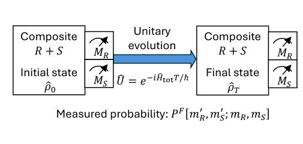
<figcaption class="paper-figure-caption"><b>Fig 1.</b> FIG. 1. General framework of formulating fluctuation the- orems for autonomous work in the quantum regime. The composite system (the work source R and the system of in- terest S) undergoes unitary evolution. Successive projective measurements on the work source and on the system are im- plemented at initial and final times. Here, mR (m′ R) and mS (m′ S) denote the outcomes of the initial (final) measurements over the work source and the system, respectively.</figcaption>
</figure>
<figure class="paper-figure-card">
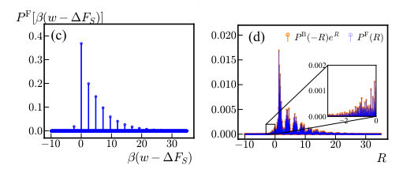
<figcaption class="paper-figure-caption"><b>Fig 2.</b> FIG. 2. (a) Illustration of the Dicke model, consisting of a single-mode radiation field and N two-level atoms. (b) The evolution of the expected value ⟨ˆJx⟩of the atoms. (c) and (d) show the statistics of the finite-time excitation β(w −∆FS) of the radiation field and the joint fluctuation variable R = β(w −∆FS) + ∆ϕ, respectively. In panels (b) (c) and (d), ℏ= 1, β = 3, ωc = 0.8, ωz = 0.4, λ = 0.25. The number of atoms is N = 50. The dimension of the Hilbert space of the radiation field is truncated at 50, a large enough value in the evolution. The initial distribution pj of atoms is generated by the normal distribution with the average value −25 and the standard deviation 5 and then...</figcaption>
</figure>
<figure class="paper-figure-card">
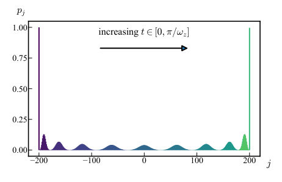
<figcaption class="paper-figure-caption"><b>Fig 3.</b> FIG. 3. The distribution of ˆJx in the Dicke model [Eq. (23)] at different times during the evolution in the limit of vanishing backaction. The eleven distributions from the left to the right correspond to t ∈[0, 1] with the interval 0.1. Parameters: ℏ= 1, β = 1, ωc = 8, ωz = π, λ = 0.6. The number of atoms is N = 400. The dimension of the Hilbert space of the radiation field is truncated at 20, a large enough value in the evolution. The initial state of the ensemble of atoms is the eigenstate of ˆJx with the minimum eigenvalue, j = −200. The initial state of the radiation field is the thermal state with j = −200 [Eq. (7)].</figcaption>
</figure>
<figure class="paper-figure-card">
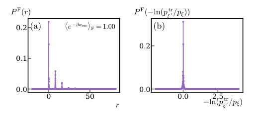
<figcaption class="paper-figure-caption"><b>Fig 4.</b> FIG. 4. Recover the fluctuation theorems for nonautonomous exclusive work in the limit of vanishing backaction. (a) The distribution of r. (b) The distribution of −ln  ptr ξ′/pξ  . In this plot, ℏ= 1, β = 1, ωc = 8, ωz = π, λ = 0.6. The number of atoms is N = 400. The dimension of the Hilbert space of the radiation field is truncated at 20. The initial distribution of atoms on the eigenvalues of ˆJz in the forward process is generated by the normal distribution with the average value 0 and the standard deviation 50 and then renormalized. The initial state of the radiation field is the thermal state of ˆH0 S. The time of obtaining this plot is t = 5.2.</figcaption>
</figure>
<figure class="paper-figure-card">
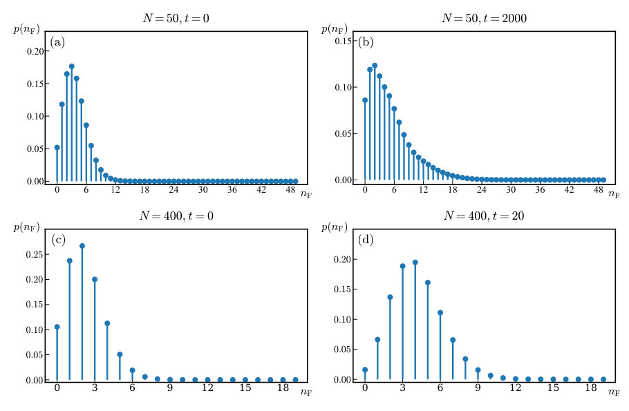
<figcaption class="paper-figure-caption"><b>Fig 5.</b> FIG. 5. Convergence check of the truncated Fock states. (a) and (b), using the same parameters as those in Fig. 2(b-c) in the main text. ℏ= 1, β = 3, ωc = 0.8, ωz = 0.4, and λ = 0.25. The number of atoms is N = 50. The dimension of the local Hilbert space of the radiation field is truncated at 50. The initial distribution of atoms pj on the eigenvalues of ˆJx in the forward process is generated by the normal distribution with the average value −25 and standard deviation 5 and then renormalized. The initial state of the radiation field is the mixed thermal state. (c) and (d), using the same parameters as those in Fig. 3 in the main text. ℏ= 1, β = 1, ωc = 8, ωz = π, λ = 0.6. The number of...</figcaption>
</figure>
</div>

<p><strong>Summary.</strong> This paper extends fluctuation theorems for autonomous work from classical physics into the quantum regime. It derives generalized Jarzynski and Crooks relations using projective measurements on a coupled system. The key finding is that quantum noncommutativity imposes fundamental constraints, preventing simple reduction to classical forms, which is demonstrated using the Dicke model.</p>
<p><strong>Why it may be interesting.</strong> This work directly addresses non-equilibrium thermodynamics in open quantum systems, which is central to understanding energy transduction in nanoscale quantum devices and quantum heat engines.</p>
<details>
<summary>Detailed structure</summary>
<p><strong>Main problem.</strong> The primary goal is extending fluctuation theorems for autonomous work from classical statistical mechanics into the quantum domain.</p>
<p><strong>Main result.</strong> Fluctuation theorems (Jarzynski-type and Crooks-type) are derived for inclusive work, showing that quantum noncommutativity prevents a simple reduction to nonautonomous forms.</p>
<p><strong>Method.</strong> The authors use successive projective measurements over the work source and system Hamiltonian to derive generalized fluctuation relations by comparing forward and backward process probabilities.</p>
<p><strong>Model / system.</strong> The analysis is generally framed for a composite system ($S$ coupled to $R$), but the Dicke model (single-mode radiation field as system, two-level atoms as work source) is used for concrete illustration.</p>
<p><strong>Key observables.</strong> Inclusive work ($w[\Gamma]$), joint probabilities ($P_F[\Gamma], P_B[	ilde{\Gamma}]$), and fluctuation variables $R$.</p>
<p><strong>Important parameters / regimes.</strong> Temperature ($eta$), time ($T$), coupling strengths ($\lambda, \omega_c$).</p>
<p><strong>Assumptions / limitations.</strong> The analysis assumes the work source observable has a discrete spectrum; crucially, quantum noncommutativity prevents a direct reduction to nonautonomous fluctuation theorems.</p>
<p><strong>Figures summary.</strong> Figure 1 illustrates the general measurement framework. Figure 2 and 8 confirm the Crooks-type theorem in the Dicke model by showing the collapse of $P_F$ and $P_B e^R$.</p>
<p><strong>Paper structure.</strong> The paper establishes the theoretical extension of fluctuation theorems for autonomous work to the quantum regime, derives the relations using measurement formalism, discusses the constraints imposed by quantum mechanics (noncommutativity), and verifies these results using the Dicke model.</p>
</details>
<details>
<summary>Abstract</summary>
<p>Fluctuation theorems for work provide universal constraints on nonequilibrium fluctuations, yet their quantum generalizations often rely on externally prescribed classical driving protocols. While for classical systems, fluctuation theorems have been extended to autonomous work, where the dynamics of the work source is subject to the backaction of the system, their generalization to the quantum regime is constrained by the uncertainty principle. Here, we extend fluctuation theorems for autonomous work from the classical regime to the quantum regime. By performing successive projective measurements over the work source and the system, we derive Jarzynski-type and Crooks-type fluctuation theorems for autonomous inclusive work from initial mixed thermal states. These relations are analogous to fluctuation theorems for autonomous work in the classical regime and explicitly incorporate the fluctuations of the work source. However, quantum noncommutativity prevents a consistent reduction to the nonautonomous counterparts, even in the limit of a large work source and correspondingly negligible backaction. By contrast, under the exclusive work definition, the nonautonomous limit is recovered when the measured observable of the work source commutes with its bare Hamiltonian and the backaction of the system on the work source is negligible. Our results are illustrated with the Dicke model, where a single-mode radiation field and an ensemble of two-level atoms act as the system of interest and the work source, respectively.</p>
</details>
<p><sub><a href="#top">↑ back to top</a></sub></p>

<p><a id="paper-2607.22855"></a></p>
<h3 id="spin-induced-multipartite-steady-state-entanglement-of-motional-modes-in-hexagonal-boron-nitride-membranes"><a href="http://arxiv.org/abs/2607.22855v1">Spin-induced multipartite steady-state entanglement of motional modes in hexagonal boron nitride membranes</a></h3>
<p><strong>Authors:</strong> Nahid Yazdi, Vahid Salari, Roohollah Ghobadi<br>
<strong>Type:</strong> theory · <strong>Category:</strong> quantum information and computing · <strong>PDF:</strong> <a href="https://arxiv.org/pdf/2607.22855v1">https://arxiv.org/pdf/2607.22855v1</a><br>
<strong>Analysis basis:</strong> full PDF text, analyzed in chunks
<strong>Topic relevance:</strong> 🔥 <code>analog quantum simulation</code> <strong>4/5</strong> · 🔥 <code>entanglement &amp; information structure</code> <strong>4/5</strong> · <code>exotic spin models in light-matter</code> <strong>3/5</strong> · <code>methods for driven-dissipative</code> <strong>3/5</strong> · <code>spintronics-quantum-optics interface</code> <strong>3/5</strong> · <code>correlated / nonlocal dissipation</code> <strong>2/5</strong> · <code>driven-dissipative phase transition</code> <strong>2/5</strong> · <code>non-equilibrium dynamics</code> <strong>2/5</strong> · <code>Keldysh / 2PI / non-Gaussian methods</code> <strong>1/5</strong> · <code>Tavis-Cummings &amp; cavity-many-emitter</code> <strong>1/5</strong> · <code>correlated cavity matter</code> <strong>1/5</strong> · <code>non-equilibrium universality</code> <strong>1/5</strong></p>
<div class="figure-strip-hint">↔ Scroll figures horizontally</div>
<div class="paper-figures-scroll">
<figure class="paper-figure-card">
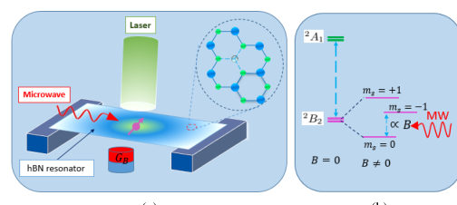
<figcaption class="paper-figure-caption"><b>Fig 1.</b> Figure 1. Schematic description of the proposed setup. (1a) A single spin can be addressed to couple to three mechanical modes via mag- netic coupling. (1b) Level structure of hBN.</figcaption>
</figure>
<figure class="paper-figure-card">
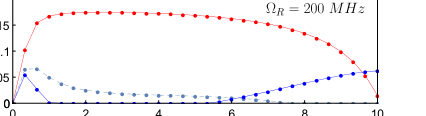
<figcaption class="paper-figure-caption"><b>Fig 2.</b> Figure 3. Plot of logarithmic negativity EN of the three bipartite subsystems E12 N (phonons 1 and 2), E23 N (phonons 2 and 3), and E13 N (phonons 1 and 3) vs the normalized coupling constant g/ωmax in which ωmax = ω3 and g = g1 for two different values of the Rabi frequency, (3a) ΩR/2π = 30 MHz and (3b) ΩR/2π = 200 MHz, for ¯nk = 0 (k = 1, 2, 3).</figcaption>
</figure>
<figure class="paper-figure-card">
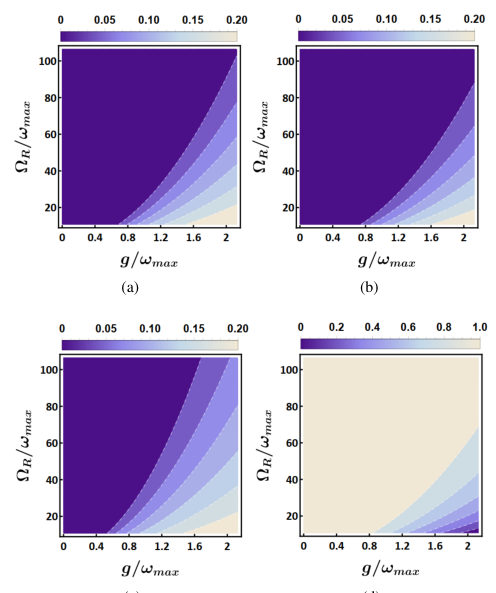
<figcaption class="paper-figure-caption"><b>Fig 3.</b> Figure 2. Density plot of the steady-state bipartite entanglement (log- arithmic negativity EN ) for (2a) E12 N , (2b) E13 N , and (2c) E23 N , and (2d) density plot of the stability of the system, vs the normalized Rabi frequency of the classical driving field ΩR/ω1 and the ratio of coupling constant and mode frequency g/ω1 for the parameters given in the text.</figcaption>
</figure>
<figure class="paper-figure-card">
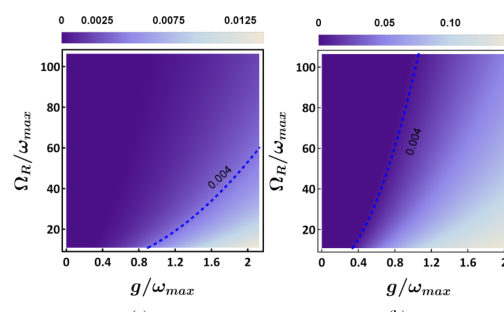
<figcaption class="paper-figure-caption"><b>Fig 4.</b> Figure 4. (4a) Genuine tripartite entanglement as measured by the minimum residual contangle Emin τ . (4b) Bipartite entanglement for ω1/2π = ω2/2π = ω3/2π = 4.70 MHz and g1 = g2 = g3. The other parameters are the same as in Fig. 2.</figcaption>
</figure>
<figure class="paper-figure-card">
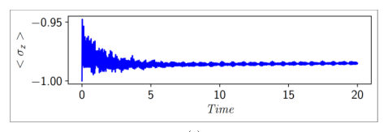
<figcaption class="paper-figure-caption"><b>Fig 5.</b> Figure 5. Expectation value for the operator σz as time goes by, in the far-detuning regime. The other parameters are the same as in the main text.</figcaption>
</figure>
</div>

<p><strong>Summary.</strong> The paper theoretically models how coupling three mechanical modes of an hBN membrane to a spin defect can induce effective phonon-phonon interactions. By analyzing the steady state using advanced quantum dynamics techniques, the authors show that robust bipartite and tripartite entanglement is achievable. This work proposes a solid-state route toward generating continuous-variable cluster states for universal quantum computation.</p>
<p><strong>Why it may be interesting.</strong> This work directly addresses solid-state quantum memories and processing elements by engineering robust, controllable multipartite entanglement between mechanical oscillators, a key requirement for scalable continuous-variable quantum computation.</p>
<details>
<summary>Detailed structure</summary>
<p><strong>Main problem.</strong> The central goal is achieving and characterizing genuine multipartite steady-state entanglement among the motional modes of a hexagonal boron nitride (hBN) membrane.</p>
<p><strong>Main result.</strong> The study demonstrates that both bipartite and genuinely tripartite steady-state entanglement can be achieved in these mechanical modes using a spin defect mediator, paving the way for scalable cluster state generation.</p>
<p><strong>Method.</strong> The analysis employs theoretical tools including deriving effective Hamiltonians via Schrieffer-Wolff transformations and analyzing system dynamics using Langevin-Heisenberg equations of motion to find stable steady states.</p>
<p><strong>Model / system.</strong> The physical platform is an hBN membrane with three coupled mechanical (motional) modes interacting with a common, optically addressable spin defect. The interaction leads to effective phonon-phonon coupling.</p>
<p><strong>Key observables.</strong> Bipartite and genuinely tripartite steady-state entanglement quantified by measures like Logarithmic Negativity ($ ext{EN}$) and minimum residual continuous-variable tangle ($   ext{Emin}_  au$).</p>
<p><strong>Important parameters / regimes.</strong> Operation requires the dispersive regime ($\delta_{\min} \gg g_k$) and extremely low temperatures ($T \approx 0.05 	ext{ mK}$). The Rabi frequency ($\Omega_R$) is a critical control parameter.</p>
<p><strong>Assumptions / limitations.</strong> The primary assumptions include operating in the dispersive regime, allowing for adiabatic elimination of the spin degree of freedom, and assuming high mechanical quality factors ($Q_m \gg 1$).</p>
<p><strong>Figures summary.</strong> Figures illustrate achievable bipartite entanglement levels ($ ext{EN}$) across different mode frequencies and show how $  ext{EN}$ and genuine tripartite entanglement ($ ext{Emin}_  au$) vary with the coupling strength relative to the Rabi frequency.</p>
<p><strong>Paper structure.</strong> The paper progresses from defining the full Hamiltonian, deriving an effective quadratic Hamiltonian using SW transformations in the dispersive regime, analyzing stability via Lyapunov equations for the covariance matrix, and finally quantifying entanglement measures in the resulting steady state.</p>
</details>
<details>
<summary>Abstract</summary>
<p>In this paper, we focus on a scheme in which three high-quality-factor mechanical modes of a hexagonal boron nitride (hBN) membrane monolayer are coupled to a common optically addressable spin defect present in the membrane via magnetic field interaction. We show that this coupling induces an effective phonon-phonon interaction in the dispersive regime and under appropriate magnetic field and microwave modulation. We derive the Langevin-Heisenberg equations of motion for vibrational modes to analyze optimal parameter regimes for reaching a physically stable system. We also investigate the effect of coupling strength on purity and entanglement. Our results demonstrate that bipartite and genuinely tripartite steady-state entanglement between different vibrational modes of hBN may be achieved in a broad spectrum of experimental parameters. This study has the potential to enable scalability to be implemented for the generation of two-dimensional continuous-variable cluster states for universal quantum computation.</p>
</details>
<p><sub><a href="#top">↑ back to top</a></sub></p>

<p><a id="paper-2607.22860"></a></p>
<h3 id="full-wave-nonlinear-microscopy-reveals-guided-channel-for-ultrafast-polariton-transport"><a href="http://arxiv.org/abs/2607.22860v1">Full-wave nonlinear microscopy reveals guided channel for ultrafast polariton transport</a></h3>
<p><strong>Authors:</strong> Qingyi Zhou, Piper Fowler-Wright, Zongfu Yu, Joel Yuen-Zhou, Michael Reitz<br>
<strong>Type:</strong> theory · <strong>Category:</strong> other · <strong>PDF:</strong> <a href="https://arxiv.org/pdf/2607.22860v1">https://arxiv.org/pdf/2607.22860v1</a><br>
<strong>Analysis basis:</strong> full PDF text, analyzed in chunks
<strong>Topic relevance:</strong> 🔥 <code>analog quantum simulation</code> <strong>4/5</strong> · 🔥 <code>methods for driven-dissipative</code> <strong>4/5</strong> · 🔥 <code>non-equilibrium dynamics</code> <strong>4/5</strong> · <code>correlated cavity matter</code> <strong>3/5</strong> · <code>driven-dissipative phase transition</code> <strong>3/5</strong> · <code>Tavis-Cummings &amp; cavity-many-emitter</code> <strong>2/5</strong> · <code>non-equilibrium universality</code> <strong>2/5</strong> · <code>Keldysh / 2PI / non-Gaussian methods</code> <strong>1/5</strong> · <code>correlated / nonlocal dissipation</code> <strong>1/5</strong> · <code>entanglement &amp; information structure</code> <strong>1/5</strong> · <code>interference shaping light</code> <strong>1/5</strong></p>
<div class="figure-strip-hint">↔ Scroll figures horizontally</div>
<div class="paper-figures-scroll">
<figure class="paper-figure-card">
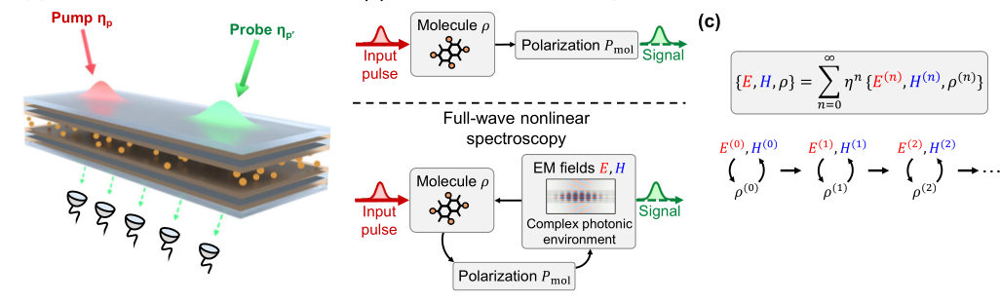
<figcaption class="paper-figure-caption"><b>Fig 1.</b> FIG. 1. Full-wave nonlinear spectroscopy. (a) Prototypical setup for spatially resolved pump–probe spectroscopy with light- matter back-action: an ensemble of molecules is placed inside an optical cavity formed by DBR mirrors, which is driven by input pulses with amplitudes ηp (pump) and ηp′ (probe). (b) Schematic comparison between the proposed “full-wave nonlinear spectroscopy” and conventional “free-space spectroscopy”. In the conventional framework, molecules are driven by a prescribed incident field. In contrast, our framework accounts for the feedback of the molecular response onto the optical field, enabling a self-consistent treatment of coupled light–matter dynamics in complex and...</figcaption>
</figure>
<figure class="paper-figure-card">
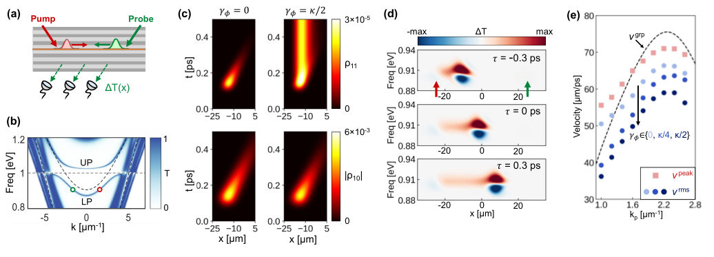
<figcaption class="paper-figure-caption"><b>Fig 2.</b> FIG. 2. Full-wave pump-probe microscopy results for molecules inside a DBR cavity. (a) Schematics of the pump-probe experiment, where a planar DBR cavity (gray) containing a molecular layer (orange) is driven by counter-propagating pump (p) and probe (p′) pulses. Information about pump-induced transport is retrieved through the differential signal ∆T(x), detected along the probe direction. (b) TMM results of the dispersion relation, revealing the UP and LP branches. The red (green) dot indicates the in-plane wave vector of the incident pump (probe) pulse, centered at kp = −kp′ = π/2 µm−1. The molecules’ transition frequency is fixed as ω0 = 1 eV. The dashed lines indicate the molecular...</figcaption>
</figure>
<figure class="paper-figure-card">
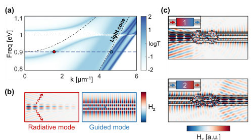
<figcaption class="paper-figure-caption"><b>Fig 3.</b> FIG. 3. Co-existence of radiative and nonradiative channels inside a DBR cavity. (a) Transmission heatmap of the DBR cavity with molecular layer inside, obtained via TMM. The black dashed lines indicate the molecular transition frequency at 1.0 eV, the bare cavity dispersion, and the light line. The blue dashed line marks the operating frequency at 0.9 eV, cor- responding to the carrier frequency of the input pulse. The red and blue dots identify the cavity polariton mode and the guided polariton mode, respectively. The results are visual- ized in log scale to reveal the dispersion of the guided modes below the light cone. (b) Hz field distribution of the radiative cavity mode and the...</figcaption>
</figure>
<figure class="paper-figure-card">
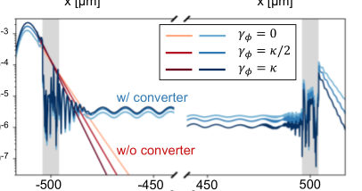
<figcaption class="paper-figure-caption"><b>Fig 4.</b> FIG. 4. Leveraging the guided mode in a DBR cavity for long-range excitation transport. (a) Simulation setup. The cavity polariton excited by the pump is first converted into a guided polariton by the first converter, propagates through the low-loss guided mode, and is then transformed back into a cavity polariton by the second converter. (b) Results with- out dephasing (γϕ = 0). Top: population heatmap ρ11(x, t). Bottom: the corresponding pump–probe microscopy signal ∆T(x, ω), which is separated into two regions by the mode converters; in the region between them, no radiation escapes the structure, so ∆T ≈0. (c) The same two quantities for γϕ = κ/2, which leads to static dark population....</figcaption>
</figure>
</div>

<p><strong>Summary.</strong> The paper develops a full-wave simulation framework to model ultrafast polariton transport in DBR cavities. It overcomes the inherent limitations of molecular excitation transport by designing photonic mode converters that couple energy from leaky cavity modes into low-loss guided modes. This engineering feat enables long-range, efficient transport of quantum excitations.</p>
<p><strong>Why it may be interesting.</strong> This work directly addresses open quantum system dynamics (excitons coupled to cavity fields) and uses advanced numerical techniques (FDTD, adjoint optimization) to engineer macroscopic transport pathways for quantum excitations, which is highly relevant to AMO physics and quantum optics.</p>
<details>
<summary>Detailed structure</summary>
<p><strong>Main problem.</strong> The primary challenge is overcoming the short-range transport bottleneck of molecular excitations by enabling fast, long-range polariton transport.</p>
<p><strong>Main result.</strong> By engineering mode converters using guided photonic modes below the light line, researchers demonstrated energy transfer that enables molecular excitation transport over a millimeter, an order of magnitude improvement.</p>
<p><strong>Method.</strong> The study employs self-consistent Maxwell–Liouville framework solved via full-wave finite-difference time-domain (FDTD) simulations and optimization techniques to design mode converters.</p>
<p><strong>Model / system.</strong> The system involves exciton polaritons in strongly coupled light-matter systems within Distributed Bragg Reflector (DBR) cavities. The model incorporates molecular dynamics governed by a quantum master equation coupled self-consistently with Maxwell's equations.</p>
<p><strong>Key observables.</strong> Spatially-resolved pump–probe differential transmission signal ($\Delta T$), polariton transport characteristics, and energy population dynamics ($n_B(t)$).</p>
<p><strong>Important parameters / regimes.</strong> Molecular dephasing rate ($\gamma_\phi$), cavity loss rate ($\kappa$), and the ability to utilize guided modes below the light cone.</p>
<p><strong>Assumptions / limitations.</strong> The initial model uses a minimal two-level description for molecules, but the core advancement relies on extending simulations beyond single-mode descriptions to include the full modal landscape.</p>
<p><strong>Figures summary.</strong> Figures illustrate self-consistent nonlinear spectroscopy (comparing to free-space), dispersion relations showing LP/UP modes, and crucially, heatmaps demonstrating energy transport over long distances when mode converters couple radiative polaritons into low-loss guided channels.</p>
<p><strong>Paper structure.</strong> The paper progresses from establishing the full-wave simulation framework for nonlinear microscopy, detailing how molecular back-action is included. It then focuses on the limitation imposed by dephasing in single modes and introduces the structural engineering solution: designing mode converters to couple energy into low-loss guided polariton channels.</p>
</details>
<details>
<summary>Abstract</summary>
<p>We show how finite-difference time-domain (FDTD) simulations can be extended to model ultrafast nonlinear microscopy, enabling the prediction of spatially-resolved pump--probe signals in arbitrary electromagnetic environments. Focusing on polariton transport in strongly coupled light--matter systems, we develop a perturbative framework to study the ultrafast propagation of hybrid light--matter excitations in nanophotonic structures. We first apply the framework to a standard distributed Bragg reflector (DBR) cavity, reproducing established results for polariton transport from a multimode Tavis--Cummings model. We then consider the full modal landscape of the same cavity, including guided modes below the light line that are typically neglected in single-mode-family descriptions. Exploiting these modes, we design compact mode converters that transfer radiative cavity polaritons into photon-like guided polaritons and back, utilizing the guided modes for low-loss propagation. Despite molecular dephasing, this enables transport of molecular excitation over a millimeter, an order of magnitude beyond current transport experiments. We further compute the pump--probe differential transmission signal, providing an experimental signature of the mechanism. Our results show that the modal landscape of a photonic cavity can be engineered to bypass limitations commonly assumed to be intrinsic to the transport of molecular polaritons.</p>
</details>
<p><sub><a href="#top">↑ back to top</a></sub></p>

<p><a id="paper-2607.23533"></a></p>
<h3 id="dynamical-control-of-particle-jets-from-a-driven-condensate-in-a-one-dimensional-lattice-with-double-well-potential"><a href="http://arxiv.org/abs/2607.23533v1">Dynamical control of particle jets from a driven condensate in a one-dimensional lattice with double-well potential</a></h3>
<p><strong>Authors:</strong> Z. Li, L. Q. Lai<br>
<strong>Type:</strong> theory · <strong>Category:</strong> quantum gases · <strong>PDF:</strong> <a href="https://arxiv.org/pdf/2607.23533v1">https://arxiv.org/pdf/2607.23533v1</a><br>
<strong>Analysis basis:</strong> full PDF text, analyzed in chunks
<strong>Topic relevance:</strong> 🔥 <code>analog quantum simulation</code> <strong>4/5</strong> · 🔥 <code>non-equilibrium dynamics</code> <strong>4/5</strong> · <code>driven-dissipative phase transition</code> <strong>3/5</strong> · <code>methods for driven-dissipative</code> <strong>3/5</strong> · <code>Frenkel-Kontorova</code> <strong>2/5</strong> · <code>Keldysh / 2PI / non-Gaussian methods</code> <strong>2/5</strong> · <code>non-equilibrium universality</code> <strong>2/5</strong> · <code>correlated / nonlocal dissipation</code> <strong>1/5</strong> · <code>entanglement &amp; information structure</code> <strong>1/5</strong> · <code>scars &amp; prethermalization</code> <strong>1/5</strong></p>
<div class="figure-strip-hint">↔ Scroll figures horizontally</div>
<div class="paper-figures-scroll">
<figure class="paper-figure-card">
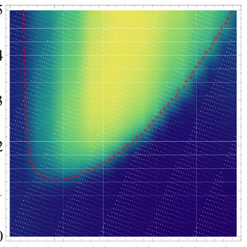
<figcaption class="paper-figure-caption"><b>Fig 1.</b> FIG. 4. Number of excited particles ∆N vs the drive strength g and the hopping amplitude J. The color area results from the numerics of Eqs. (2) and (3), and the red dashed line comes from the analytical solution in Eqs. (16) and (17). We have taken the depth of the well V = −2 and the drive fre- quency ω = 4Jh. The tunneling strength is Jl = 1, and the evolution time is τ = 100.</figcaption>
</figure>
<figure class="paper-figure-card">
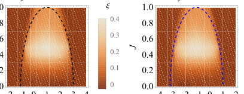
<figcaption class="paper-figure-caption"><b>Fig 2.</b> FIG. 2. Regimes for the symmetric mode and antisymmetric mode. The numerical results (color areas) are obtained by di- rectly solving Eqs. (2) and (3), while the analytical solutions (dashed lines) come from Eqs. (10) and (11). Color bars de- notes the emission rate ξ of the particles. Here, the tunneling strength is Jl = 1, and the drive strength is g = 0.2. We have taken the simulation time τ = 50.</figcaption>
</figure>
<figure class="paper-figure-card">

<figcaption class="paper-figure-caption"><b>Fig 3.</b> Figure 3 shows the short-time decay behavior of the total particle number N0 under a fixed drive strength,</figcaption>
</figure>
<figure class="paper-figure-card">
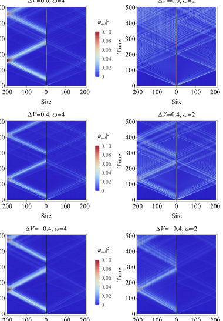
<figcaption class="paper-figure-caption"><b>Fig 4.</b> FIG. 7. Number of particles |φµ,j|2 on the jth site of each lead as a function of time, when the drive frequency is tuned to ω = 4 and ω = 2. The depth of the left well is kept as Vc = −2, while the right one varies as Vb = −2, −1.6, and −2.4, respectively. The other parameters are g = 0.3, Jb = 0.1, Jc = 0.3, and Jl = 1.</figcaption>
</figure>
</div>

<p><strong>Summary.</strong> This paper theoretically explores how external driving and structural asymmetries can be used to control the emission of particles from a Bose-Einstein condensate confined in a double-well lattice. By tuning parameters like well depth bias or hopping imbalance, researchers demonstrated methods to enhance or suppress quantum particle jets, offering insights for building atomtronic devices.</p>
<p><strong>Why it may be interesting.</strong> This work directly addresses controllable quantum transport phenomena using ultracold atoms (BECs) in engineered potentials, which is a major focus area for AMO physics and atomtronic device design.</p>
<details>
<summary>Detailed structure</summary>
<p><strong>Main problem.</strong> The study investigates the nonlinear dynamics of particle jets emitted from a Bose-Einstein condensate trapped in a double-well potential subjected to time-periodic external driving.</p>
<p><strong>Main result.</strong> The emission rate can be precisely controlled by tuning the depth asymmetry between the wells or by modulating the hopping amplitudes, demonstrating tunable quantum many-body transport.</p>
<p><strong>Method.</strong> The analysis uses mean-field approximations and solves coupled differential equations derived from a Hamiltonian describing the driven condensate dynamics in the double well.</p>
<p><strong>Model / system.</strong> The system is a Bose-Einstein condensate confined to a one-dimensional lattice with a double-well potential, where interatomic interactions are periodically modulated. The model incorporates hopping terms, on-site potentials, and time-dependent driving fields.</p>
<p><strong>Key observables.</strong> Particle emission rate ($\xi$), total particle number decay ($N_0(t)$), and particle imbalance between the two wells.</p>
<p><strong>Important parameters / regimes.</strong> Drive strength ($g$), lattice hopping amplitude ($J$), depth asymmetry ($\Delta V = V_b - V_c$), and hopping imbalance ($\Delta J = J_b - J_c$).</p>
<p><strong>Assumptions / limitations.</strong> The analysis often proceeds using the mean-field approximation, sometimes simplifying to $U=0$ or employing a two-mode approximation ansatz.</p>
<p><strong>Figures summary.</strong> Figures illustrate excitation regimes based on drive strength and hopping amplitude (Fig. 2), particle number decay over time under varying driving frequencies (Fig. 3), and dependence of emission rate on depth asymmetry ($\Delta V$) and hopping imbalance ($\Delta J$).</p>
<p><strong>Paper structure.</strong> The paper builds from defining the Hamiltonian and mean-field equations, analyzing excitation regimes in symmetric cases, and then systematically introducing asymmetries ($\Delta V 
eq 0$) and imbalances ($\Delta J$) to demonstrate control over particle emission.</p>
</details>
<details>
<summary>Abstract</summary>
<p>We investigate the nonlinear dynamics of a Bose-Einstein condensate trapped in a double-well potential of a one-dimensional lattice, where the interatomic interactions are periodically modulated in time. In the typical case of a symmetric double-well, we observe collective particle emission under resonant driving, where the excitation regimes are explicitly constrained by the interplay between the drive strength and the hopping amplitude. By introducing a depth asymmetry between the wells, we find that moderate bias specifically enhances the emission rate, while large asymmetry suppresses it. The particle jets can be further controlled by modulating the hopping amplitudes, where the emission is weakened for finite hopping imbalances. These results outline the roles of asymmetry and external driving in precisely manipulating quantum many-body transport, and may offer insights into the design of atomtronic devices.</p>
</details>
<p><sub><a href="#top">↑ back to top</a></sub></p>

<p><a id="paper-2607.24739"></a></p>
<h3 id="quantum-simulacra"><a href="http://arxiv.org/abs/2607.24739v1">Quantum simulacra</a></h3>
<p><strong>Authors:</strong> L. F. Alves da Silva, M. H. Y. Moussa<br>
<strong>Type:</strong> theory · <strong>Category:</strong> other · <strong>PDF:</strong> <a href="https://arxiv.org/pdf/2607.24739v1">https://arxiv.org/pdf/2607.24739v1</a><br>
<strong>Analysis basis:</strong> full PDF text, analyzed in chunks
<strong>Topic relevance:</strong> 🔥 <code>measurement-induced transitions</code> <strong>4/5</strong> · <code>Tavis-Cummings &amp; cavity-many-emitter</code> <strong>3/5</strong> · <code>quantum measurements</code> <strong>3/5</strong> · <code>correlated / nonlocal dissipation</code> <strong>2/5</strong> · <code>driven-dissipative phase transition</code> <strong>2/5</strong> · <code>entanglement &amp; information structure</code> <strong>2/5</strong> · <code>Dicke superradiance</code> <strong>1/5</strong> · <code>analog quantum simulation</code> <strong>1/5</strong> · <code>correlated cavity matter</code> <strong>1/5</strong> · <code>methods for driven-dissipative</code> <strong>1/5</strong> · <code>non-equilibrium dynamics</code> <strong>1/5</strong> · <code>non-equilibrium universality</code> <strong>1/5</strong> · <code>superradiant laser</code> <strong>1/5</strong></p>
<div class="figure-strip-hint">↔ Scroll figures horizontally</div>
<div class="paper-figures-scroll">
<figure class="paper-figure-card">
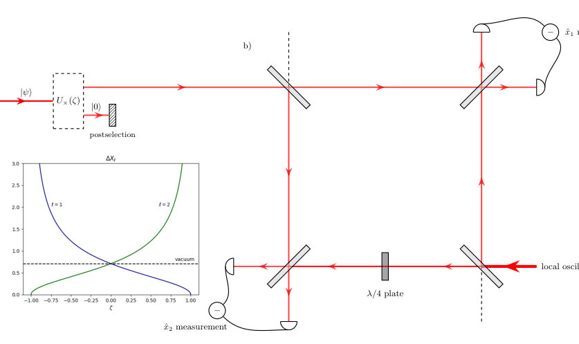
<figcaption class="paper-figure-caption"><b>Fig 1.</b> Fig. 1: (a) Success-failure mechanism implementing the postselection required by the con-</figcaption>
</figure>
</div>

<p><strong>Summary.</strong> The paper introduces 'quantum simulacra,' demonstrating how changing the mathematical metric used to measure a quantum system can make it appear to exhibit properties—like entanglement or superradiance—that are not present in its underlying Hamiltonian. This is achieved by combining advanced measurement techniques (POVMs with postselection) with a metric operator $\Theta$, suggesting that experimental context fundamentally shapes perceived physical reality.</p>
<p><strong>Why it may be interesting.</strong> This work provides a powerful conceptual tool showing that physical reality is not solely determined by the Hamiltonian but can be engineered or revealed through the choice of measurement framework (the metric).</p>
<details>
<summary>Detailed structure</summary>
<p><strong>Main problem.</strong> The paper analyzes 'quantum simulacra': phenomena that emerge when quantum systems are analyzed using metrics other than the standard L2 norm.</p>
<p><strong>Main result.</strong> By redefining the measurement metric ($\Theta$), one can generate observable effects, such as Bell violations with unentangled photons or superradiant phase transitions, that are absent in the standard Hamiltonian description.</p>
<p><strong>Method.</strong> The analysis adapts pseudo-Hermitian quantum mechanics frameworks, utilizing a positive-definite metric operator $\Theta$ and combining Positive Operator-Valued Measures (POVM) with postselected subensembles for measurement.</p>
<p><strong>Model / system.</strong> The work applies to various systems, including radiation-field modes (squeezing), two-level systems (entanglement/Bell tests), and the Tavis–Cummings model. The core concept involves modifying the inner product via $\Theta$.</p>
<p><strong>Key observables.</strong> Correlation functions $E(\varphi_A, \varphi_B)$, Concurrence ($C$), squeezing quadratures ($\Delta X_\ell$), and photon number ($\hat{n}$).</p>
<p><strong>Important parameters / regimes.</strong> The metric choice is parametrized by $\zeta$ (or related parameters in the Tavis-Cummings model), which dictates whether a simulacrum manifests.</p>
<p><strong>Assumptions / limitations.</strong> The procedure critically relies on combining POVMs with postselection to enforce the use of the non-standard metric $\Theta$ during measurement, rather than assuming it is inherent to the Hamiltonian.</p>
<p><strong>Figures summary.</strong> Figures illustrate the 'POVM + postselection' scheme for continuous quadratures and show theoretical uncertainties ($\Delta X_\ell$) versus a parameter $\zeta$.</p>
<p><strong>Paper structure.</strong> The paper builds from general principles of metric-dependent observables, applies this to specific examples like squeezing and entanglement (showing simulacra), and culminates in demonstrating the feasibility of superradiant phase transitions via metric engineering.</p>
</details>
<details>
<summary>Abstract</summary>
<p>Here we analyze the creation of quantum simulacra: phenomena that emerge from treating a Hermitian or non-Hermitian quantum system in metrics other than the standard $L^{2}$. Changing the metric redefines the set of system observables and thus the experimental arrangement for their measurement, making quantum contextuality and microscopic reality metric-dependent. The simulacra therefore consist, on the one hand, of a resizing of the status of quantum measurement, which has always occupied a central role in quantum mechanics: beyond the connection between quantum and classical dynamics, measurements performed in an appropriate metric can emulate a microscopic reality distinct from that prescribed by the Hamiltonian. On the other hand, simulacra provide a route to implementing quantum operations that lie beyond the reach of the $L^2$ metric. Quantum simulacra offer, as an example, an explanation for the recent observation of the violation of Bell inequalities with unentangled photons [Sci. Adv. \textbf{11}, eadr1794 (2025)]: photons that are separable in $L^2$ metric, become entangled when analyzed within a new metric framework. Simulacrum comes at the cost of implementing measurements of the metric-redefined observables; to address this challenge, we propose a scheme combining positive operator-valued measures with postselected subensembles.</p>
</details>
<p><sub><a href="#top">↑ back to top</a></sub></p>

<p><a id="paper-2607.24350"></a></p>
<h3 id="electron-shuttle-waiting-times-for-electric-field-sensing"><a href="http://arxiv.org/abs/2607.24350v1">Electron Shuttle Waiting Times for Electric Field Sensing</a></h3>
<p><strong>Authors:</strong> Alberto Mayorgas, Alberto López-García, Enamul Haque, Javier Cerrillo<br>
<strong>Type:</strong> theory · <strong>Category:</strong> other · <strong>PDF:</strong> <a href="https://arxiv.org/pdf/2607.24350v1">https://arxiv.org/pdf/2607.24350v1</a><br>
<strong>Analysis basis:</strong> full PDF text, analyzed in chunks
<strong>Topic relevance:</strong> 🔥 <code>methods for driven-dissipative</code> <strong>4/5</strong> · <code>Keldysh / 2PI / non-Gaussian methods</code> <strong>3/5</strong> · <code>driven-dissipative phase transition</code> <strong>3/5</strong> · <code>Kondo &amp; dissipative impurity</code> <strong>2/5</strong> · <code>non-equilibrium dynamics</code> <strong>2/5</strong> · <code>quantum measurements</code> <strong>2/5</strong> · <code>analog quantum simulation</code> <strong>1/5</strong> · <code>correlated / nonlocal dissipation</code> <strong>1/5</strong> · <code>entanglement &amp; information structure</code> <strong>1/5</strong> · <code>measurement-induced transitions</code> <strong>1/5</strong> · <code>non-equilibrium universality</code> <strong>1/5</strong></p>
<div class="figure-strip-hint">↔ Scroll figures horizontally</div>
<div class="paper-figures-scroll">
<figure class="paper-figure-card">

<figcaption class="paper-figure-caption"><b>Fig 1.</b> FIG. 1: Schematic representation of the electron shuttle. The central island (quantum dot) is modeled as a two-level system with level spacing εI (red) and moves in a harmonic potential with energy quantum ℏν, represented by the orange springs. The blue dash-dotted arrows indicate position-dependent electron tunnelling from the source to the island and from the island to the drain, with rates Γeˆx/λ and Γe−ˆx/λ, respectively, where ˆx is the island displacement and λ is the tunnelling length. The applied bias V controls the island–oscillator coupling strength χ, while the gray dashed arrow denotes mechanical damping at rate κ due to the coupling of the oscillator to a thermal bath.</figcaption>
</figure>
<figure class="paper-figure-card">

<figcaption class="paper-figure-caption"><b>Fig 2.</b> FIG. 2: Husimi function of the stationary solution in the electronic diagonal elements subspaces ρ(+) 0 = ⟨1| ρ0 |1⟩ (top row) and ρ(−) 0 = ⟨0| ρ0 |0⟩(bottom row), for three values of the electric field χ = 0.1ν, 0.35ν, 0.6ν in the tunneling, crossover and shuttle regimes respectively (left to right columns). The axis represent the real and imaginary part of the phase space parameter α. The parameters used are Γ = 0.01ν, κ = 0.05ν, λ = 2x0 and an oscillator basis of size N = 50.</figcaption>
</figure>
<figure class="paper-figure-card">

<figcaption class="paper-figure-caption"><b>Fig 3.</b> FIG. 4: Mean waiting time (solid blue) and standard deviation (dashed) in ν−1 units at the left axis, and Fano factor (orange) at the right axis. Magnitudes are derived from the waiting time distribution of the electron shuttle (7). The parameters used are Γ = 0.01ν, κ = 0.05ν, λ = 2x0 and an oscillator basis of size N = 50. The WTD has been calculated in a 1000 elements time window of τ ∈[0, 300ν−1].</figcaption>
</figure>
<figure class="paper-figure-card">

<figcaption class="paper-figure-caption"><b>Fig 4.</b> FIG. 3: Heatmap of the waiting time distribution w(τ) as a function of the coupling χ (in ν units) and the waiting times (in ν−1 units). The WTD has been calculated in a 1000 elements time window of τ ∈[0, 300ν−1], in logarithmic scale to increase the point density for low waiting times. The horizontal dashed line identifies the period of the oscillator in the shuttle regime, 2π/ν ≃6.28ν−1. The parameters used are Γ = 0.01ν, κ = 0.05ν, λ = 2x0 and an oscillator basis of size N = 50.</figcaption>
</figure>
<figure class="paper-figure-card">

<figcaption class="paper-figure-caption"><b>Fig 5.</b> FIG. 6: Quantum Fisher Information for a continuous measurement (11) divided by the measuring time T (blue), and QFI divided by the CFI of Figure 5 bottom panel (orange), both as function of the coupling χ. The parameters used are Γ = 0.01ν, κ = 0.05ν, λ = 2x0 and an oscillator basis of size N = 50.</figcaption>
</figure>
</div>

<p><strong>Summary.</strong> This paper investigates using the timing of electron tunneling events in a quantum electron shuttle to sense electric fields. By analyzing waiting-time statistics derived from a master equation model, the authors quantify the sensing limit by comparing classical and quantum Fisher information. The results highlight that the system's crossover regime offers superior sensitivity for electromechanical parameter estimation.</p>
<p><strong>Why it may be interesting.</strong> This work bridges mesoscopic physics (quantum dots/shuttles) with quantum metrology by showing how temporal statistics (waiting times) in open quantum systems can be used as sensitive probes for external fields, a key area for AMO and quantum optics research.</p>
<details>
<summary>Detailed structure</summary>
<p><strong>Main problem.</strong> The study aims to utilize waiting-time statistics from an electron shuttle system to estimate external electric fields, thereby quantifying the metrological potential of charge transport fluctuations.</p>
<p><strong>Main result.</strong> The analysis shows that the crossover region between tunneling and shuttling regimes exhibits enhanced fluctuations and a pronounced enhancement in the Fisher information, improving parameter sensitivity for sensing.</p>
<p><strong>Method.</strong> The authors analyze stationary dynamics using Markovian quantum master equations to derive waiting time distributions (WTDs) and compare the resulting classical Fisher information against the theoretical quantum Fisher information.</p>
<p><strong>Model / system.</strong> The physical system is a quantum electron shuttle, modeled as a single-level quantum dot coupled to leads and an oscillating nanomechanical resonator. The dynamics are governed by a master equation incorporating tunneling, oscillator coupling ($\propto E$), and Ohmic dissipation.</p>
<p><strong>Key observables.</strong> Waiting time distribution (WTD), mean waiting time ($\langle	au
angle$), variance ($\sigma_	au$), Fano factor ($I$), classical Fisher information, and quantum Fisher information.</p>
<p><strong>Important parameters / regimes.</strong> Electric field coupling strength ($\chi$), bias voltage regime (high-bias), Coulomb blockade strength, and the ratio of tunneling rates to mechanical frequency ($\Gamma/
u$).</p>
<p><strong>Assumptions / limitations.</strong> The dynamics are treated using a Markovian master equation derived via Born-Markov approximations, assuming constant parameters for frequencies and rates.</p>
<p><strong>Figures summary.</strong> Figure 1 schematically illustrates the electron shuttle setup. Figure 2 shows transitions in the Husimi function from Fock to toroidal shapes as coupling changes. Figure 3 displays WTD heatmaps showing frequency dependence on $\chi$.</p>
<p><strong>Paper structure.</strong> The paper establishes the physical model and Hamiltonian, derives the master equation for the island-oscillator subsystem, analyzes stationary states via phase space methods, calculates WTDs, and finally applies quantum estimation theory to compare classical vs. quantum Fisher information.</p>
</details>
<details>
<summary>Abstract</summary>
<p>We explore the use of waiting-time statistics in a quantum electron shuttle for electric-field sensing. Electron shuttles convert nanomechanical motion into charge transport, showing a noise-broadened crossover between stochastic tunneling and mechanically assisted charge transfer. This allows investigation of how transport fluctuations encode electromechanical parameters. Using a single-level quantum shuttle in strong-Coulomb-blockade and high-bias regimes with a Markovian quantum master equation, we analyze stationary dynamics in phase space and waiting time distributions. By estimating the electromechanical coupling, proportional to the electric field, we evaluate the classical Fisher information in waiting times and compare it with the quantum Fisher information of the stationary state. We relate the metrological response to mean waiting time, variance, and Fano factor. Our results show that the crossover from tunneling to shuttling is characterized by enhanced fluctuations and increased parameter sensitivity, leading to a pronounced enhancement of the Fisher information.</p>
</details>
<p><sub><a href="#top">↑ back to top</a></sub></p>

<p><a id="paper-2607.22991"></a></p>
<h3 id="mixing-times-and-spectra-of-non-equilibrium-symmetric-exclusion-processes-on-general-graphs"><a href="http://arxiv.org/abs/2607.22991v1">Mixing times and spectra of non-equilibrium symmetric exclusion processes on general graphs</a></h3>
<p><strong>Authors:</strong> Leonard J. Schulman, Alistair Sinclair<br>
<strong>Type:</strong> theory · <strong>Category:</strong> statistical mechanics · <strong>PDF:</strong> <a href="https://arxiv.org/pdf/2607.22991v1">https://arxiv.org/pdf/2607.22991v1</a><br>
<strong>Analysis basis:</strong> full PDF text, analyzed in chunks
<strong>Topic relevance:</strong> 🔥 <code>non-equilibrium dynamics</code> <strong>4/5</strong> · <code>methods for driven-dissipative</code> <strong>3/5</strong> · <code>non-equilibrium universality</code> <strong>3/5</strong> · <code>Keldysh / 2PI / non-Gaussian methods</code> <strong>2/5</strong> · <code>correlated / nonlocal dissipation</code> <strong>2/5</strong> · <code>driven-dissipative phase transition</code> <strong>2/5</strong> · <code>Kondo &amp; dissipative impurity</code> <strong>1/5</strong> · <code>analog quantum simulation</code> <strong>1/5</strong> · <code>entanglement &amp; information structure</code> <strong>1/5</strong> · <code>exotic spin models in light-matter</code> <strong>1/5</strong> · <code>scars &amp; prethermalization</code> <strong>1/5</strong></p>
<div class="figure-strip-hint">↔ Scroll figures horizontally</div>
<div class="paper-figures-scroll">
<figure class="paper-figure-card">

<figcaption class="paper-figure-caption"><b>Fig 1.</b> Low-resolution page preview, page 2</figcaption>
</figure>
<figure class="paper-figure-card">

<figcaption class="paper-figure-caption"><b>Fig 2.</b> Low-resolution page preview, page 3</figcaption>
</figure>
<figure class="paper-figure-card">

<figcaption class="paper-figure-caption"><b>Fig 3.</b> Low-resolution page preview, page 4</figcaption>
</figure>
<figure class="paper-figure-card">

<figcaption class="paper-figure-caption"><b>Fig 4.</b> Low-resolution page preview, page 5</figcaption>
</figure>
<figure class="paper-figure-card">

<figcaption class="paper-figure-caption"><b>Fig 5.</b> Low-resolution page preview, page 6</figcaption>
</figure>
</div>

<p><strong>Summary.</strong> This paper analyzes the challenging non-equilibrium behavior of particles on a graph modeled by the Symmetric Exclusion Process (SEP) when external heat baths are present. The authors provide quantitative bounds for how fast the system reaches steady state and develop an algorithm to calculate local correlations in this complex regime. Crucially, they prove that despite the non-reversible dynamics, the underlying spectral properties remain invariant with respect to changes in bath temperatures.</p>
<p><strong>Why it may be interesting.</strong> While focused on classical statistical mechanics, the study of non-reversible Markov dynamics, spectral gaps, and convergence rates in complex interacting systems provides foundational mathematical tools applicable to open quantum systems where dissipation drives the system away from equilibrium.</p>
<details>
<summary>Detailed structure</summary>
<p><strong>Main problem.</strong> The paper investigates the non-equilibrium dynamics, mixing times, and spectral properties of the Symmetric Exclusion Process (SEP) when external heat baths drive the system out of equilibrium on general graphs.</p>
<p><strong>Main result.</strong> They derive tight bounds for the mixing time related to single-particle hitting times and prove that the spectrum of the Markov chain is independent of the specific temperatures of the heat baths.</p>
<p><strong>Method.</strong> The analysis employs coupling arguments, generalizations of Liggett's duality theory for correlation calculations, and advanced spectral graph theory techniques (like commutator relations) to establish invariance properties.</p>
<p><strong>Model / system.</strong> The system is the Symmetric Exclusion Process (SEP), modeling interacting particles on a general graph G. The non-equilibrium aspect is introduced by coupling vertices to external heat baths at different temperatures, leading to a non-reversible Markov process.</p>
<p><strong>Key observables.</strong> Mixing time ($ au_{    ext{mix}}$), steady-state joint occupation distribution for $k$ sites, and the spectrum of the rate matrix.</p>
<p><strong>Important parameters / regimes.</strong> Graph structure (arbitrary graphs), heat bath rates ($\xi_v$), and temperatures ($h_v$).</p>
<p><strong>Assumptions / limitations.</strong> The graph G is connected and undirected; the analysis relies on extending known duality properties to include arbitrary non-equilibrium driving forces.</p>
<p><strong>Paper structure.</strong> The paper builds from establishing the difficulty of non-equilibrium SEP, deriving quantitative bounds for mixing time using hitting times, presenting an algorithm for computing joint distributions via dual processes, and finally proving spectral invariance through algebraic conditions on the generator matrix.</p>
</details>
<details>
<summary>Abstract</summary>
<p>The symmetric exclusion process (SEP) is a classical model of interacting particles on a graph, in which multiple particles execute random walks subject to the constraint that no two particles may occupy the same vertex. The version of the process in which the number of particles is fixed, is by now very well understood, through the study of reversible Markov chains.   In this paper, we study the non-equilibrium version of the SEP, in which some vertices of the graph interact with external heat baths, held at different temperatures, that mediate transport through the graph. The resulting steady-state distribution is still the stationary distribution of a natural Markov chain, but the chain is no longer reversible. This means that even the steady-state distribution is very hard to describe, and indeed is the subject of a rich literature, which has focused almost exclusively on graphs which are finite subsets of the lattice $Z^d$. Very little is known about other important quantities, notably the mixing time.   We derive various quantitative results about the non-equilibrium SEP for arbitrary graphs with arbitrary heat baths. Our main result is a bound on the mixing time in terms of the worst-case hitting time of a single particle to any of the heat baths; this bound is tight up to two logarithmic factors in the size of the graph. We then use this result to derive a simple algorithm, running in time roughly $n^{O(k)}$, that computes the steady-state joint occupation distribution for any set of $k$ vertices; since the steady-state distribution is very elusive, this provides a potentially useful tool to study its $k$-wise correlations for small values of $k$. Finally, we prove that the spectrum of the Markov chain associated with the non-reversible dynamics for the SEP is independent of the heat bath temperatures; thus in particular the spectrum is always real.</p>
</details>
<p><sub><a href="#top">↑ back to top</a></sub></p>

<p><a id="paper-2607.23681"></a></p>
<h3 id="mitigation-of-measurement-induced-state-transitions-via-a-fast-load-and-fast-clear-readout"><a href="http://arxiv.org/abs/2607.23681v1">Mitigation of Measurement-Induced State Transitions via a Fast-Load and Fast-Clear Readout</a></h3>
<p><strong>Authors:</strong> Wei-En Lin, Li-Chieh Hsiao, Chen-Hsun Ma, Erh-Hsiang Yeh, Wei-Lun Peng, Hsi-Sheng Goan, Cen-Shawn Wu, Yueh-Nan Chen, Yung-Fu Chen, Chung-Ting Ke, Chii-Dong Chen<br>
<strong>Type:</strong> both · <strong>Category:</strong> quantum information and computing · <strong>PDF:</strong> <a href="https://arxiv.org/pdf/2607.23681v1">https://arxiv.org/pdf/2607.23681v1</a><br>
<strong>Analysis basis:</strong> full PDF text, analyzed in chunks
<strong>Topic relevance:</strong> 🔥 <code>QC/QI experiment</code> <strong>4/5</strong> · 🔥 <code>measurement-induced transitions</code> <strong>4/5</strong> · <code>methods for driven-dissipative</code> <strong>3/5</strong> · <code>quantum measurements</code> <strong>3/5</strong> · <code>non-equilibrium dynamics</code> <strong>2/5</strong> · <code>Keldysh / 2PI / non-Gaussian methods</code> <strong>1/5</strong> · <code>driven-dissipative phase transition</code> <strong>1/5</strong> · <code>quantum optics experiment</code> <strong>1/5</strong></p>
<div class="figure-strip-hint">↔ Scroll figures horizontally</div>
<div class="paper-figures-scroll">
<figure class="paper-figure-card">

<figcaption class="paper-figure-caption"><b>Fig 1.</b> FIG. 1. Floquet analysis of various pulse shapes. (a) Pulse amplitudes ε(t) normalized by the steady-state amplitude εss, (b) the corresponding photon populations n(t), and (c) time-dependent branch probabilities ˜P(0 | 0) evaluated via Eq. (5), for square (blue), two-step (red), and three-step (black dashed) pulses, all initialized at t = 0. (τss + τ↑= 4 µs and τ↑= τ↓= 100 ns). (d) Normalized quasienergies ϵi/ωr as a function of the instantaneous resonator photon number n, with brown and purple curves denoting branches B0 and B6, respectively. The red dashed lines in (b) and (d) mark the critical crossing point, located at n = n0,cri = 474, while the green-shaded regions in (b) and (c)...</figcaption>
</figure>
<figure class="paper-figure-card">

<figcaption class="paper-figure-caption"><b>Fig 2.</b> FIG. 2. Device architecture and MIST characterization framework. (a) Optical micrograph of the device compris- ing a floating transmon coupled to its dedicated readout res- onator, which is inductively coupled to a common transmis- sion line. (b) Detuning frequencies extracted from the Fourier transform of Ramsey measurements at 3.077 GHz, showing the even- and odd-parity qubit frequencies as a function of applied offset charge for Q1. (c) Schematic of the MIST char- acterization protocol, incorporating three distinct analog-to- digital converter (ADC) signal integration windows. After the Ramsey-based calibration of ng and stabilization at the target bias point, the M1 pulse is applied for...</figcaption>
</figure>
<figure class="paper-figure-card">

<figcaption class="paper-figure-caption"><b>Fig 3.</b> FIG. 3. MIST structures associated with M2 and their suppression via pulse shaping for initial qubit states |i⟩. (a),(c) Measured and (b),(d) simulated MIST structures versus ng and nss, characterized by P i m for a square pulse. The experimental data are benchmarked against numerical simulations via Eq. (6). (e),(g) Measured and (f),(h) simulated suppression of MIST features, achieved via a calibrated two-step pulse scheme with τ↑= 100 ns and a state-independent amplitude ε↑determined by Eq. (10). The red, green, and brown semi-transparent guide lines overlaying panels (b),(f) are applied for the qubit prepared in |0⟩to trace the transitions from B0 to branches B6, B8, and B9,...</figcaption>
</figure>
<figure class="paper-figure-card">

<figcaption class="paper-figure-caption"><b>Fig 4.</b> FIG. 4. Readout error probabilities for initial qubit states |i⟩as a function of nss, extracted from the data in Fig. 3. Blue and red denote the square and two-step pulses, respectively. Throughout all panels, solid, dashed, and dotted curves represent the total readout error probability P i err, the ng-averaged transition probability P im(M2), and the overlap error εo(M2), respectively. (a),(b) Experimental data. The measured P im(M2) for the square and two-step pulses are indicated by dashed curves with circles (blue) and squares (red), respectively. (c),(d) Corresponding numerical simulations.</figcaption>
</figure>
<figure class="paper-figure-card">

<figcaption class="paper-figure-caption"><b>Fig 5.</b> Figure 3 presents the measured P i m values for Q1 along- side numerical simulations to systematically investigate the behavior of MIST under both square (Figs. 3(a)–(d)) and calibrated two-step (Figs. 3(e)–(h)) pulse profiles. In these panels, multiple band structures characterized by high transition probabilities are clearly visible, indicat- ing the presence of MIST. The background probability is higher in the experiment than that in the simulation, an offset we attribute to decoherence, which is not accounted for in our model. To identify the underlying physics of these features, we perform a numerical Floquet branch analysis. For instance, the red, green, and brown semi- transparent...</figcaption>
</figure>
</div>

<p><strong>Summary.</strong> This paper tackles the critical issue of Measurement-Induced State Transitions (MIST) limiting qubit readout speed and fidelity in superconducting processors. The authors propose engineering fast-load and fast-clear pulse sequences to suppress unwanted resonator photon dynamics. By showing that a simple three-step pulse minimizes total error probabilities, they offer a robust, practical solution for improving quantum processor performance.</p>
<p><strong>Why it may be interesting.</strong> This work provides highly practical, hardware-agnostic pulse shaping techniques that directly address fundamental limitations in superconducting quantum processor readout fidelity, which is crucial for scaling up quantum computation.</p>
<details>
<summary>Detailed structure</summary>
<p><strong>Main problem.</strong> The primary challenge addressed is mitigating Measurement-Induced State Transitions (MIST) during rapid, high-fidelity readout of superconducting qubits.</p>
<p><strong>Main result.</strong> The authors demonstrate that a straightforward three-step pulse scheme effectively minimizes overall readout errors by suppressing resonator photon overshoots and optimizing the diabatic passage through resonance crossings.</p>
<p><strong>Method.</strong> They systematically investigate MIST dynamics using Floquet branch analysis on a semiclassical driven transmon model, comparing various pulse shaping techniques (square vs. two/three-step).</p>
<p><strong>Model / system.</strong> The system is a superconducting transmon qubit coupled to a resonator in a charge-sensitive architecture. The Hamiltonian describes the time evolution under external driving fields and includes terms sensitive to the offset charge $n_g$.</p>
<p><strong>Key observables.</strong> Measurement-induced transition probability ($P_{im}$), total readout error probabilities ($P_{i}^{	ext{err}}$), and resonator photon number dynamics $n(t)$.</p>
<p><strong>Important parameters / regimes.</strong> Offset charge ($n_g$), steady-state resonator photon number ($n_{	ext{ss}}$), cavity decay rate ($\kappa$), and the quasienergy gap ($\Delta_{	ext{ac}}$).</p>
<p><strong>Assumptions / limitations.</strong> The analysis relies on a semiclassical approximation, neglecting quantum fluctuations, and assumes conditions like $\kappa \ll \omega_d$ for Floquet analysis.</p>
<p><strong>Figures summary.</strong> Figures compare MIST structures using different pulse shapes (square vs. two/three-step) across varying $n_g$ and $n_{	ext{ss}}$, showing error probability maps for Q1 and Q2.</p>
<p><strong>Paper structure.</strong> The paper progresses from identifying the fundamental limitation (MIST due to readout), developing a theoretical framework using Floquet analysis, proposing fast-load/fast-clear pulse engineering, and finally validating the optimal three-step scheme through detailed numerical simulations and comparisons across different qubit states.</p>
</details>
<details>
<summary>Abstract</summary>
<p>High-fidelity and rapid qubit readout is essential for superconducting quantum processors, typically realized through the quantum non-demolition (QND) dispersive interaction within a qubit-resonator architecture. However, the achievable readout speed and fidelity are fundamentally limited by measurement-induced state transitions (MIST). For a transmon qubit, MIST is highly sensitive to the offset charge $n_g$ due to the charge dispersion of its higher-lying energy levels. In this work, we systematically investigate $n_g$-dependent MIST dynamics governed by the diabaticity and symmetry of pulse shaping within a charge-sensitive transmon architecture. We engineer fast-load and fast-clear pulses that effectively suppress resonator photon overshoots, thereby demonstrating a highly practical strategy to mitigate MIST without requiring complex waveforms or real-time feedback. Utilizing active gate-voltage control and rapid feedback, the measurement-induced transition probability is precisely mapped against $n_g$ and the steady-state resonator photon number, exhibiting strong agreement with numerical Floquet branch analysis. Ultimately, we evaluate the $n_g$-averaged total error probabilities for both readout and post-readout stages, verifying that a straightforward three-step pulse scheme consistently minimizes overall readout errors. Within the framework of large-scale superconducting quantum processors, this practical, hardware-free approach inherently offers a better trade-off between the readout signal-to-noise ratio and QND preservation.</p>
</details>
<p><sub><a href="#top">↑ back to top</a></sub></p>

<p><a id="paper-2607.24094"></a></p>
<h3 id="thermodynamics-with-thermodynamic-variable-first-passage-time-ii-dynamics-of-explosive-boiling-of-superheated-liquid-critical-indices-fractional-calculus"><a href="http://arxiv.org/abs/2607.24094v1">Thermodynamics with thermodynamic variable first-passage time. II. Dynamics of explosive boiling of superheated liquid, critical indices, fractional calculus</a></h3>
<p><strong>Authors:</strong> V. V. Ryazanov<br>
<strong>Type:</strong> theory · <strong>Category:</strong> statistical mechanics · <strong>PDF:</strong> <a href="https://arxiv.org/pdf/2607.24094v1">https://arxiv.org/pdf/2607.24094v1</a><br>
<strong>Analysis basis:</strong> full PDF text, analyzed in chunks
<strong>Topic relevance:</strong> 🔥 <code>non-equilibrium universality</code> <strong>4/5</strong> · <code>correlated / nonlocal dissipation</code> <strong>3/5</strong> · <code>driven-dissipative phase transition</code> <strong>3/5</strong> · <code>methods for driven-dissipative</code> <strong>3/5</strong> · <code>non-equilibrium dynamics</code> <strong>3/5</strong> · <code>Keldysh / 2PI / non-Gaussian methods</code> <strong>1/5</strong> · <code>Kondo &amp; dissipative impurity</code> <strong>1/5</strong> · <code>analog quantum simulation</code> <strong>1/5</strong></p>
<div class="figure-strip-hint">↔ Scroll figures horizontally</div>
<div class="paper-figures-scroll">
<figure class="paper-figure-card">

<figcaption class="paper-figure-caption"><b>Fig 1.</b> Low-resolution page preview, page 2</figcaption>
</figure>
<figure class="paper-figure-card">

<figcaption class="paper-figure-caption"><b>Fig 2.</b> Low-resolution page preview, page 3</figcaption>
</figure>
<figure class="paper-figure-card">

<figcaption class="paper-figure-caption"><b>Fig 3.</b> Low-resolution page preview, page 4</figcaption>
</figure>
<figure class="paper-figure-card">

<figcaption class="paper-figure-caption"><b>Fig 4.</b> Low-resolution page preview, page 5</figcaption>
</figure>
<figure class="paper-figure-card">

<figcaption class="paper-figure-caption"><b>Fig 5.</b> Low-resolution page preview, page 6</figcaption>
</figure>
</div>

<p><strong>Summary.</strong> This paper develops a sophisticated thermodynamic framework using stochastic first-passage time concepts to analyze extreme non-equilibrium processes, such as explosive boiling. It mathematically justifies the use of fractional calculus by showing that memory effects naturally lead to these derivatives in transport equations. The work provides critical indices describing kinetic instabilities and extends its utility to general mesoscopic systems beyond simple phase transitions.</p>
<p><strong>Why it may be interesting.</strong> While focused on classical phase transitions, the rigorous mathematical machinery involving fractional derivatives and memory effects is highly relevant for modeling open quantum systems where dissipation and environmental coupling lead to non-Markovian dynamics (e.g., quantum Brownian motion).</p>
<details>
<summary>Detailed structure</summary>
<p><strong>Main problem.</strong> The study investigates non-equilibrium thermodynamics, particularly focusing on how stochastic first-passage time (FPT) dynamics influence processes like explosive boiling near phase transitions.</p>
<p><strong>Main result.</strong> The framework establishes that dissipation is determined by the integral history of matter flow and shows that critical indices describe kinetic catastrophes violating minimum entropy production principles.</p>
<p><strong>Method.</strong> It combines First-Passage Time Thermodynamics with Zubarev's Non-Equilibrium Statistical Operator theory, leading to the incorporation of fractional Caputo derivatives into hydrodynamic equations.</p>
<p><strong>Model / system.</strong> The primary model is the explosive boiling of a superheated liquid undergoing a first-order phase transition. The analysis extends this framework to general open dissipative systems like charge transport in nanostructures and viscoelastic fluids.</p>
<p><strong>Key observables.</strong> Nonlocal entropy production, critical index of dissipation intensity (z), average/variance of first-passage time ($\langle fpt/
angle$, $   ext{Var}(fpt/\langle
angle)$).</p>
<p><strong>Important parameters / regimes.</strong> Fractional derivative order ($\alpha$), thermodynamic regulator ($\gamma$), external pressure ($P_{	ext{ext}}$), and the history integral of matter flow $J(t)$.</p>
<p><strong>Assumptions / limitations.</strong> The approach assumes that classical thermodynamics fails near phase transitions due to strong memory effects, necessitating the use of fractional calculus and FPT as a primary thermodynamic variable.</p>
<p><strong>Figures summary.</strong> Not specified by notes; figures likely illustrate the dependence of entropy production or critical indices on external parameters like pressure or time history.</p>
<p><strong>Paper structure.</strong> The paper builds from establishing TFPT thermodynamics using power-law distributions, applying this to explosive boiling to derive nonlocal entropy production and critical indices, and finally generalizing the formalism to other non-equilibrium systems like charge transport and viscoelastic relaxation.</p>
</details>
<details>
<summary>Abstract</summary>
<p>Within the framework of stochastic first-passage time thermodynamics (TFPT) and power-law distributions (Mittag-Leffler and Levy), the appearance of fractional Caputo derivatives in hydrodynamic equations is substantiated. The developed framework is applied to the problem of explosive boiling of a superheated liquid: an integral formula for nonlocal entropy production is derived and the critical index of dissipation intensity is calculated, along with qualitative changes in these parameters upon introducing external pressure. It is found that dissipation at a given instant is strictly determined by the integral history of the macroscopic matter flow J(t) over the entire evolutionary interval up to the moment of phase explosion. The calculated critical dissipation index z strictly describes the kinetic catastrophe and the violation of Prigogine's minimum entropy production principle near spinodals.</p>
</details>
<p><sub><a href="#top">↑ back to top</a></sub></p>

<p><a id="paper-2607.23956"></a></p>
<h3 id="dynamical-quantum-phase-transitions-in-a-pseudo-hermitian-hamiltonian-the-imbalanced-pairing-kitaev-model"><a href="http://arxiv.org/abs/2607.23956v1">Dynamical Quantum Phase Transitions in a Pseudo-Hermitian Hamiltonian: The Imbalanced-Pairing Kitaev Model</a></h3>
<p><strong>Authors:</strong> R. Jafari, Alireza Akbari, Shukhrat Mardonov, H. Yavartanoo<br>
<strong>Type:</strong> theory · <strong>Category:</strong> statistical mechanics · <strong>PDF:</strong> <a href="https://arxiv.org/pdf/2607.23956v1">https://arxiv.org/pdf/2607.23956v1</a><br>
<strong>Analysis basis:</strong> full PDF text, analyzed in chunks
<strong>Topic relevance:</strong> 🔥 <code>driven-dissipative phase transition</code> <strong>4/5</strong> · 🔥 <code>non-equilibrium dynamics</code> <strong>4/5</strong> · <code>methods for driven-dissipative</code> <strong>3/5</strong> · <code>non-equilibrium universality</code> <strong>3/5</strong> · <code>Keldysh / 2PI / non-Gaussian methods</code> <strong>1/5</strong> · <code>Kondo &amp; dissipative impurity</code> <strong>1/5</strong> · <code>analog quantum simulation</code> <strong>1/5</strong> · <code>correlated / nonlocal dissipation</code> <strong>1/5</strong></p>
<div class="figure-strip-hint">↔ Scroll figures horizontally</div>
<div class="paper-figures-scroll">
<figure class="paper-figure-card">

<figcaption class="paper-figure-caption"><b>Fig 1.</b> FIG. 1. Equilibrium phase diagram of the imbalanced- pairing Kitaev model in the µ-γ plane. The diagram shows the topological superconducting, non-topological superconduct- ing, and gapless non-Hermitian phases. The boundaries of the gapless non-Hermitian region for γ &lt; 0 correspond to ex- ceptional points.</figcaption>
</figure>
<figure class="paper-figure-card">

<figcaption class="paper-figure-caption"><b>Fig 2.</b> FIG. 2. Transition probability pk as a function of momentum for ramps from µi = −3 to µf = 0.5, crossing the single critical point µc = −1. Panels (a)–(c) show pk for different values of γ and sweep velocities: (a) v = 0.5, (b) v = 1, and (c) v = 2. Panels (d)–(f) show the corresponding biorthogonal dynamical free energy g(t) and DTOP Nw(t) for v = 1: (d) γ = 0.1, (e) γ = 1, and (f) γ = 1.5. The blurred curve in panel (d) denotes the conventional dynamical free energy, shown for comparison. The system size is N = 1000.</figcaption>
</figure>
<figure class="paper-figure-card">

<figcaption class="paper-figure-caption"><b>Fig 3.</b> FIG. 3. Transition probability pk as a function of momentum for ramps from µi = −3 to µf = 3, crossing two critical points, µc = ±1, or two exceptional points, µex = ± p</figcaption>
</figure>
<figure class="paper-figure-card">

<figcaption class="paper-figure-caption"><b>Fig 4.</b> FIG. 4. Dynamical phase diagram in the v-γ plane for a ramp across two critical points or two exceptional points. The region marked “DQPTs” indicates parameter values for which dynamical quantum phase transitions occur.</figcaption>
</figure>
</div>

<p><strong>Summary.</strong> The paper analyzes Dynamical Quantum Phase Transitions (DQPTs) in the pseudo-Hermitian imbalanced-pairing Kitaev model under time-dependent driving. Using the biorthogonal Loschmidt echo formalism, it establishes that DQPTs are contingent upon the final Hamiltonian having a real spectrum. The results quantify how non-Hermiticity affects these transitions, showing critical velocities that vanish in certain limits.</p>
<p><strong>Why it may be interesting.</strong> This work directly addresses non-equilibrium dynamics in open or non-Hermitian quantum systems, which is highly relevant for understanding driven many-body physics beyond standard equilibrium thermodynamics.</p>
<details>
<summary>Detailed structure</summary>
<p><strong>Main problem.</strong> The study investigates Dynamical Quantum Phase Transitions (DQPTs) occurring during non-equilibrium evolution, specifically in pseudo-Hermitian quantum systems driven by time-dependent fields.</p>
<p><strong>Main result.</strong> DQPTs are found to occur only when the final Hamiltonian possesses a real energy spectrum; furthermore, for certain driving protocols, the critical sweep velocity above which transitions vanish is dependent on the non-Hermiticity parameter.</p>
<p><strong>Method.</strong> The analysis employs the biorthogonal framework and utilizes the Loschmidt echo formalism to diagnose nonanalyticities in the dynamical free-energy density during a linear ramp protocol.</p>
<p><strong>Model / system.</strong> The system under study is the imbalanced-pairing Kitaev model, which serves as a prototypical pseudo-Hermitian Hamiltonian. The dynamics are driven by a linearly time-dependent chemical potential, $\mu(t) = \mu_f + vt$.</p>
<p><strong>Key observables.</strong> Dynamical free-energy density ($g(t)$), Loschmidt echo ($L(t)$), and the critical sweep velocity.</p>
<p><strong>Important parameters / regimes.</strong> Non-Hermiticity parameter ($\gamma$), linear ramp rate ($v$), and the final chemical potential ($\mu_f$).</p>
<p><strong>Assumptions / limitations.</strong> The analysis assumes an integrable system that can be decomposed into independent two-level Hamiltonians for each momentum mode, necessitating the use of the biorthogonal framework.</p>
<p><strong>Figures summary.</strong> Figure 1 illustrates the equilibrium phase diagram in the $\mu-\gamma$ plane, demarcating topological, non-topological, and gapless non-Hermitian phases, with boundaries related to exceptional points.</p>
<p><strong>Paper structure.</strong> The paper establishes the theoretical framework using biorthogonal techniques for pseudo-Hermitian systems. It then applies this formalism to analyze the time evolution under a linear ramp protocol, calculating observables like the Loschmidt echo and identifying conditions for DQPTs based on spectral properties.</p>
</details>
<details>
<summary>Abstract</summary>
<p>Although parity-time (PT)-symmetric Hamiltonians are often associated with real energy spectra, PT symmetry is neither a sufficient nor a necessary condition for a real spectrum. More generally, real spectra are associated with the broader class of pseudo-Hermitian Hamiltonians, of which PT-symmetric Hamiltonians constitute a simple subclass. Here, we investigate the nonequilibrium dynamics of the imbalanced-pairing Kitaev model, a prototypical pseudo-Hermitian system, under a linearly time-dependent chemical potential. The dynamics are analyzed within the biorthogonal framework using the concept of dynamical quantum phase transitions (DQPTs). We show that, under a linear ramp protocol, DQPTs occur only when the post-ramp Hamiltonian possesses a real energy spectrum. For positive values of the non-Hermiticity parameter ($γ>0$), where the energy spectrum remains entirely real, a ramp crossing a single quantum critical point gives rise to a single family of critical times, analogous to the Hermitian case. Furthermore, for ramps crossing two critical or exceptional points, the critical sweep velocity above which DQPTs disappear decreases as the non-Hermiticity parameter is reduced and vanishes in the staggered-pairing limit, $γ=-1$.</p>
</details>
<p><sub><a href="#top">↑ back to top</a></sub></p>

<p><a id="paper-2607.23223"></a></p>
<h3 id="kinetic-and-hydrodynamic-theories-of-chiral-intruder-dynamics-in-nonequilibrium-baths"><a href="http://arxiv.org/abs/2607.23223v1">Kinetic and Hydrodynamic Theories of Chiral Intruder Dynamics in Nonequilibrium Baths</a></h3>
<p><strong>Authors:</strong> Raphaël Maire, Ignacio Pagonabarraga<br>
<strong>Type:</strong> theory · <strong>Category:</strong> statistical mechanics · <strong>PDF:</strong> <a href="https://arxiv.org/pdf/2607.23223v1">https://arxiv.org/pdf/2607.23223v1</a><br>
<strong>Analysis basis:</strong> full PDF text, analyzed in chunks
<strong>Topic relevance:</strong> 🔥 <code>non-equilibrium dynamics</code> <strong>4/5</strong> · <code>Keldysh / 2PI / non-Gaussian methods</code> <strong>3/5</strong> · <code>methods for driven-dissipative</code> <strong>3/5</strong> · <code>non-equilibrium universality</code> <strong>3/5</strong> · <code>correlated / nonlocal dissipation</code> <strong>2/5</strong> · <code>driven-dissipative phase transition</code> <strong>2/5</strong> · <code>Frenkel-Kontorova</code> <strong>1/5</strong></p>
<div class="figure-strip-hint">↔ Scroll figures horizontally</div>
<div class="paper-figures-scroll">
<figure class="paper-figure-card">

<figcaption class="paper-figure-caption"><b>Fig 1.</b> FIG. 1. Cartoon of the intruder and its parametrization</figcaption>
</figure>
<figure class="paper-figure-card">

<figcaption class="paper-figure-caption"><b>Fig 2.</b> FIG. 2. Pressure and velocity field (streamline plot) (a, c, e) around an intruder in a chiral bath using Eqs. (F33), (F34), and (F35). The corresponding body frame velocity field is also shown in (b, d, f). For (a) and (b) U∞η/τ0R0 = 0.2, for (c) and (d) U∞η/τ0R0 = 0.5 and for (e) and (f) U∞η/τ0R0 = 1.</figcaption>
</figure>
<figure class="paper-figure-card">

<figcaption class="paper-figure-caption"><b>Fig 3.</b> FIG. 3. Pressure and velocity fields around a convex intruder (top), together with the pressure distribution along its boundary (bottom), for an ellipse (a: m = 2, ϵ = 1/5), a triangle (b: m = 3, ϵ = 1/10), and a square (c: m = 4, ϵ = 1/17).</figcaption>
</figure>
<figure class="paper-figure-card">

<figcaption class="paper-figure-caption"><b>Fig 4.</b> FIG. 4. Examples of wheels as given by Eqs. (E26) and (E27), for various χw at fixed number of teeth n.</figcaption>
</figure>
</div>

<p><strong>Summary.</strong> This paper develops a comprehensive theory to describe how an object (intruder) moves within a surrounding fluid bath under non-equilibrium conditions. It rigorously derives separate descriptions for both dilute kinetic collisions and dense hydrodynamic flow regimes. The key contribution is quantifying the role of chirality, showing it generates unique odd responses and torques in both theoretical limits.</p>
<p><strong>Why it may be interesting.</strong> This work provides advanced theoretical tools for modeling non-equilibrium transport phenomena, particularly how geometric chirality introduces odd responses that are crucial in understanding active matter or complex fluids far from equilibrium.</p>
<details>
<summary>Detailed structure</summary>
<p><strong>Main problem.</strong> The study investigates the chiral dynamics of an intruder immersed in a nonequilibrium bath across two distinct theoretical limits: the dilute kinetic regime and the dense hydrodynamic regime.</p>
<p><strong>Main result.</strong> In the dilute limit, chirality generates odd responses and torques via an effective Langevin equation; conversely, the dense limit reveals that edge currents generate antisymmetric drag and curvature-induced torque when inertia is included.</p>
<p><strong>Method.</strong> The authors employ a multi-scale theoretical approach, deriving equations from Boltzmann-Lorentz descriptions (kinetic) and analyzing flow fields using hydrodynamic expansions (dense).</p>
<p><strong>Model / system.</strong> The system consists of an intruder interacting with a surrounding bath fluid. The analysis uses concepts ranging from collision rules and Kramers-Moyal expansions to full chiral Navier-Stokes equations.</p>
<p><strong>Key observables.</strong> Odd response, torque generation, ratchet effects, antisymmetric drag, edge currents, damping coefficients ($\Gamma_{ab}, \Gamma_{a\phi}$), and diffusion tensors ($D_{ij}$).</p>
<p><strong>Important parameters / regimes.</strong> Dilute kinetic regime vs. dense hydrodynamic regime; intruder shape chirality; bath density; inertia (when included).</p>
<p><strong>Assumptions / limitations.</strong> The analysis relies on deriving effective equations by separating effects in different limits, though the connection between these regimes is a key focus.</p>
<p><strong>Figures summary.</strong> Not specified.</p>
<p><strong>Paper structure.</strong> The paper systematically develops the theory by first addressing the dilute kinetic limit via Langevin derivations and then transitioning to the dense hydrodynamic regime using continuum fluid mechanics principles.</p>
</details>
<details>
<summary>Abstract</summary>
<p>We study the chiral dynamics of an intruder immersed in a nonequilibrium bath in two complementary limits: the dilute kinetic regime and the dense hydrodynamic regime. In the dilute limit, starting from a Boltzmann-Lorentz description, we derive an effective Langevin equation whose coefficients are given explicitly by geometry-dependent boundary integrals. This formulation separates the effects of intruder-shape chirality from those of chiral intruder-bath interactions. We find that the chiral interactions generate an odd response and a torque, whereas the chirality of the intruder leads to a ratchet effect. We also show that fluctuation-dissipation-like relations exist and that certain symmetry-allowed couplings vanish in the dilute regime. In the dense regime, we argue that intruder dynamics are governed primarily by bath hydrodynamics and torque-density-driven edge currents not captured by the previous framework. These currents can generate both an antisymmetric drag and a curvature-induced torque, leading to an antisymmetric response when inertia is accounted for. Taken together, these results provide a step toward understanding the mechanisms governing the chiral dynamics of an intruder in a nonequilibrium bath across different scales.</p>
</details>
<p><sub><a href="#top">↑ back to top</a></sub></p>

<p><a id="paper-2607.23414"></a></p>
<h3 id="multiconfigurational-mixed-quantum-classical-approach-for-correlated-many-body-dynamics"><a href="http://arxiv.org/abs/2607.23414v1">Multiconfigurational Mixed Quantum-Classical Approach for Correlated Many-Body Dynamics</a></h3>
<p><strong>Authors:</strong> Pritha Ghosh, Rajanya Sarkar, Arkajit Mandal<br>
<strong>Type:</strong> theory · <strong>Category:</strong> strongly correlated electrons · <strong>PDF:</strong> <a href="https://arxiv.org/pdf/2607.23414v1">https://arxiv.org/pdf/2607.23414v1</a><br>
<strong>Analysis basis:</strong> full PDF text, analyzed in chunks
<strong>Topic relevance:</strong> 🔥 <code>methods for driven-dissipative</code> <strong>4/5</strong> · <code>Keldysh / 2PI / non-Gaussian methods</code> <strong>3/5</strong> · <code>non-equilibrium dynamics</code> <strong>3/5</strong> · <code>driven-dissipative phase transition</code> <strong>2/5</strong> · <code>Frenkel-Kontorova</code> <strong>1/5</strong> · <code>analog quantum simulation</code> <strong>1/5</strong> · <code>correlated / nonlocal dissipation</code> <strong>1/5</strong> · <code>correlated cavity matter</code> <strong>1/5</strong> · <code>entanglement &amp; information structure</code> <strong>1/5</strong> · <code>non-equilibrium universality</code> <strong>1/5</strong></p>
<div class="figure-strip-hint">↔ Scroll figures horizontally</div>
<div class="paper-figures-scroll">
<figure class="paper-figure-card">

<figcaption class="paper-figure-caption"><b>Fig 1.</b> FIG. 1. Multiconfigurational many-body dynamics of a centrally initialized bosonic density of 3 excitations over a lattice of 21 sites, compared with the exact (Schr¨odinger) propagation of the same system. (a)-(c) The single-mode (M = 1), three-mode (M = 3) and ten- mode (M = 10) dynamics, respectively, of the bosonic density over time (in picoseconds). (d) The exact dynamics of the same 3-excitation system. (e)-(f) The spatial population profiles of the bosonic density at time 0.010 ps and 0.020 ps, respectively, for the representative cases (M = 1, 3, 10) (shown in (a)-(c)) and the exact (Schr¨odinger) propagation (shown in (d)). The nearest-neighbor hopping parameter (τ) is set to 0.004...</figcaption>
</figure>
<figure class="paper-figure-card">

<figcaption class="paper-figure-caption"><b>Fig 2.</b> FIG. 2. Multiconfigurational many-body dynamics of a centrally excited 3-excitation wave packet in the presence of 2% static disorder, where the on-site energies are sampled from a normal distribution. (a)-(c) The single-mode (M = 1), three-mode (M = 3) and six-mode (M = 6) dynamical evolution, respectively, of the bosonic density over time (in ps). (d) The exact dynamics of the same 3 -excitation system (for the same realizations of static disorder as in (a)-(c)). (e)-(f) Disorder-modified spatial population profiles of the bosonic density at time 0.010 ps and 0.020 ps, respectively, for the representative cases (M = 1, 3, 6) (shown in (a)-(c)) and the case of the exact quantum propagation...</figcaption>
</figure>
<figure class="paper-figure-card">

<figcaption class="paper-figure-caption"><b>Fig 3.</b> FIG. 3. Phonon-coupled exciton dynamics in the presence of dynamic disorder on a lattice of 400 sites at 150 K. The excitonic density is initialized as a many-body Gaussian wave packet centered at the middle of the lattice with σ = 50 units. (a)-(b) The mean squared displacement (MSD) of the excitonic density versus time (in ps) for single-mode (M = 1) (solid blue line) as well as for multiconfigurational calculations: (M = 2) (solid yellow line) and (M = 3) (solid red line) at U = 0.01 a.u., for 5 and 15 excitations, respectively. (c) Final-time (tf = 4.8 ps) spatial excitonic density profiles for the M = 1 (solid light blue) and M = 3 (solid red) dynamics for a density initialized with 20...</figcaption>
</figure>
<figure class="paper-figure-card">

<figcaption class="paper-figure-caption"><b>Fig 4.</b> FIG. 4. Spatial pair-probability density, at different representative times (in ps) in the many-body dynamics of excitons at a temperature of 150 K , for an initial 10-excitation wave packet on a lattice of 400 molecular sites. All the figures have been zoomed in to focus on the central zone where the dynamics hold relevance. (a)-(d) Snapshots of the single-mode (M = 1) evolution of the spatial two-body reduced density matrix (ρ(2)(i, j)) at 0 ps, 0.05 ps, 0.10 ps and 0.48 ps respectively. (e)-(h) Snapshots of the two-mode (M = 2) dynamical evolution of ρ(2)(i, j) at the same representative times as in (a)-(d), capturing transient correlations. (i)-(l) Snapshots of the three-mode (M = 3)...</figcaption>
</figure>
<figure class="paper-figure-card">

<figcaption class="paper-figure-caption"><b>Fig 5.</b> FIG. 5. Comparison of the mean squared displacement (MSD) for the multiconfigurational M = 3 dynamics over time, where the MSD plot of the M = 1 case is present as a reference, among three distinct types of approximations in the multiconfigurational (M = 3) many-body Ehrenfest dynamics of a 15-exciton system with interaction strength U = 0.01 a.u., followed by spatial pair density signatures over time in the approximate early dynamics that are compared to the reference M = 3 dynamics. (a) MSD versus time plot for M = 3 dynamics with precomputed positions and momenta (from M = 1 dynamics) (mean field path approximation or MFPA). (b) MSD versus time plot for M = 3 dynamics, but with the...</figcaption>
</figure>
</div>

<p><strong>Summary.</strong> The paper introduces a multiconfigurational mixed quantum-classical method to simulate complex exciton dynamics in disordered environments. It demonstrates that while standard mean-field approaches fail to capture essential spatial correlations, an efficient Mean-Field Path Approximation can successfully reproduce these many-body effects. This positions the approach as a powerful tool for studying correlated light-matter interactions in condensed matter systems.</p>
<p><strong>Why it may be interesting.</strong> This work is highly relevant as it tackles open quantum systems dynamics (excitons coupled to phonons) using advanced mixed quantum-classical techniques, providing systematic ways to recover strong correlations beyond simple mean-field limits.</p>
<details>
<summary>Detailed structure</summary>
<p><strong>Main problem.</strong> The work addresses simulating finite-temperature, correlated multi-exciton dynamics when coupled to phonons that induce both static and dynamic disorder.</p>
<p><strong>Main result.</strong> A multiconfigurational mixed quantum-classical approach is proposed, showing that while mean-field methods fail to capture spatial correlations, a Mean-Field Path Approximation (MFPA) can accurately reproduce these crucial correlations.</p>
<p><strong>Method.</strong> The core method is a multiconfigurational mixed quantum-classical treatment where the excitonic subsystem uses a multiconfigurational wavefunction ansatz, and the lattice vibrations (phonons) are treated quasi-classically.</p>
<p><strong>Model / system.</strong> The system models interacting excitons on a lattice coupled to phonons, governed by an effective Hamiltonian involving Bose-Hubbard terms for excitons ($\hat{H}_e$) and phonon oscillators ($\hat{H}_p$).</p>
<p><strong>Key observables.</strong> Excitonic transport (Mean Squared Displacement), spatial pair correlation function ($g^{(2)}(i, j)$), single-particle and two-particle reduced density matrices ($
ho^{(1)}, 
ho^{(2)}$).</p>
<p><strong>Important parameters / regimes.</strong> System parameters include hopping ($    au$), interaction strength ($U$), phonon coupling ($\gamma$), temperature ($T=150$ K), and disorder variance.</p>
<p><strong>Assumptions / limitations.</strong> The primary approximation is the Mean-Field Path Approximation (MFPA) used to efficiently capture spatial correlations, although this method is noted as insufficient for long-time transport dynamics.</p>
<p><strong>Figures summary.</strong> Figures illustrate the convergence of dynamics with increasing number of modes ($M$) and compare the evolution of the spatial pair correlation function $g^{(2)}$ between mean-field (low $M$) and multiconfigurational/MFPA results.</p>
<p><strong>Paper structure.</strong> The paper details the derivation of coupled equations of motion for Single Particle Functions and expansion coefficients, implements numerical techniques like gauge fixing and re-orthonormalization, and then applies this framework to simulate dynamics under varying levels of quantum correlation inclusion ($M$).</p>
</details>
<details>
<summary>Abstract</summary>
<p>In this work, we introduce a multiconfigurational mixed quantum-classical many-body approach for simulating the finite-temperature correlated multi-exciton dynamics in the presence of phonon-induced static and dynamic disorder. In this mixed quantum-classical approach, the excitonic subsystem is described using a multiconfigurational wavefunction that extends beyond the mean-field limit, while the phonons are evolved quasi-classically. Using this approach, we simulate a multi-excitonic dissipative system and show how the interplay between phonon-induced dynamic disorder and exciton-exciton many-body interactions determines excitation-dependent excitonic transport and spatial correlations. Our results show that while the mean-field approach produces semi-quantitatively accurate diffusive dynamics, it does not capture the spatial correlations as expected. We find that a mean-field path approximation, where we generate pre-computed trajectories using our mean-field mixed quantum-classical approach and then perform multiconfigurational dynamics, can reproduce the spatial correlations to a good accuracy, positioning this approach as an efficient method for capturing spatial correlations in complex systems.</p>
</details>
<p><sub><a href="#top">↑ back to top</a></sub></p>

<p><a id="paper-2607.23978"></a></p>
<h3 id="non-hermitian-enhanced-quantum-sensing-in-an-optical-interferometer"><a href="http://arxiv.org/abs/2607.23978v1">Non-Hermitian-enhanced quantum sensing in an optical interferometer</a></h3>
<p><strong>Authors:</strong> X. J. Huang, Lei Xiao, Bingzi Huo, X. X. Yi, Peng Xue<br>
<strong>Type:</strong> experiment · <strong>Category:</strong> other · <strong>PDF:</strong> <a href="https://arxiv.org/pdf/2607.23978v1">https://arxiv.org/pdf/2607.23978v1</a><br>
<strong>Analysis basis:</strong> full PDF text, analyzed in chunks
<strong>Topic relevance:</strong> 🔥 <code>quantum optics experiment</code> <strong>4/5</strong> · <code>interference shaping light</code> <strong>3/5</strong> · <code>quantum measurements</code> <strong>3/5</strong> · <code>correlated / nonlocal dissipation</code> <strong>2/5</strong> · <code>driven-dissipative phase transition</code> <strong>2/5</strong> · <code>Kondo &amp; dissipative impurity</code> <strong>1/5</strong> · <code>QC/QI experiment</code> <strong>1/5</strong> · <code>methods for driven-dissipative</code> <strong>1/5</strong> · <code>non-equilibrium dynamics</code> <strong>1/5</strong></p>
<div class="figure-strip-hint">↔ Scroll figures horizontally</div>
<div class="paper-figures-scroll">
<figure class="paper-figure-card">

<figcaption class="paper-figure-caption"><b>Fig 1.</b> FIG. 1. Experimental setup. Photon pairs are generated via spontaneous parametric down-conversion. In each pair, one photon serves as the trigger and the other is sent into the state-preparation stage followed by a Sagnac interferome- ter. In the interferometer, a BS splits the photon into path-1 and path-2 with equal probability. Along path-1, the pho- ton undergoes the unitary evolution U †, while along path-2, it undergoes the normalized positive operation R′. The two paths propagate in clockwise and counterclockwise directions, respectively, forming a closed loop and interfering at the BS. Coincidence detection of output photons with trigger photons is performed using APDs with a 3-ns...</figcaption>
</figure>
<figure class="paper-figure-card">

<figcaption class="paper-figure-caption"><b>Fig 2.</b> FIG. 2. Panels (a)–(d) show photon counts versus ϕ: (a) The I(ϕ) pattern of quantum parameter estimation using the non-optimal non-Hermitian observable A′ 1 (black solid line) and non-optimal Hermitian observable A′ 2 (black dashed line) with the initial state ρ0 at p = 0.75. (b) The I(ϕ) pattern of quantum parameter estimation using the non-optimal non-Hermitian observable A′ 1 (green solid line) and non-optimal Hermitian observable A′ 2 (green dashed line) with the initial state ρ0 at p = 0.15. (c) The I(ϕ) pattern of the optimal non-Hermitian observable A′ nH (blue dashed line) and optimal Hermitian observable A′ H (blue solid line) with the initial state at p = 0.75. (d) The I(ϕ)...</figcaption>
</figure>
<figure class="paper-figure-card">

<figcaption class="paper-figure-caption"><b>Fig 3.</b> FIG. 3. (a) Variance (∆θ)2 versus the state parameter p in the noiseless case. Theoretical predictions are shown as lines: red for the optimal non-Hermitian observable and black for the optimal Hermitian observable. Experimental variances are represented by symbols: red circles for the optimal non-Hermitian observable, black circles for the optimal Hermitian observable, red triangles for a non-optimal non-Hermitian observable, and black triangles for a non-optimal Hermitian observable. (b) Variance (∆θ)2 versus the amplitude-damping strength γ for the optimal Hermitian observable (black) and the optimal non-Hermitian observable (red), with p = 0.01 and θ = 0.3π. (c) Noise-induced variance...</figcaption>
</figure>
</div>

<p><strong>Summary.</strong> The paper experimentally demonstrates enhanced quantum parameter estimation sensitivity by employing a non-Hermitian observable readout technique on an optical interferometer. Using single photons in a Sagnac setup, the authors show that the resulting error variance is lower than the best Hermitian counterpart, even with noise present. This work provides a practical route for implementing and validating non-Hermitian concepts in quantum sensing.</p>
<p><strong>Why it may be interesting.</strong> This work provides a concrete experimental realization of using non-Hermitian physics in metrology. It is highly relevant to open quantum systems and quantum optics as it shows how engineered dissipation (non-Hermiticity) can enhance sensing while remaining physically consistent when measured fully.</p>
<details>
<summary>Detailed structure</summary>
<p><strong>Main problem.</strong> The primary goal is to enhance quantum parameter estimation sensitivity beyond limits set by standard Hermitian measurements by utilizing non-Hermitian observables.</p>
<p><strong>Main result.</strong> The experiment successfully demonstrated a reduced error-propagation variance using a non-Hermitian observable compared to the optimal Hermitian one, an advantage that persists under amplitude-damping noise.</p>
<p><strong>Method.</strong> Quantum parameter estimation was performed experimentally using a single-photon Sagnac interferometer setup. The non-Hermitian expectation value was reconstructed by analyzing interference fringes from multiple output ports.</p>
<p><strong>Model / system.</strong> The physical platform is a linear optical system utilizing single-photon probe states and a Sagnac interferometer. Non-Hermiticity is implemented through controllable, polarization-dependent photon loss within the measurement path.</p>
<p><strong>Key observables.</strong> Error-propagation variance $(\Delta	heta)^2$, reconstructed complex expectation value of the non-Hermitian observable $\langle A' 
angle(	heta)$, and Classical Fisher Information (CFI).</p>
<p><strong>Important parameters / regimes.</strong> State parameter $p$ (related to initial state preparation), noise strength $\gamma$ (amplitude damping), and the comparison between Hermitian vs. Non-Hermitian observables.</p>
<p><strong>Assumptions / limitations.</strong> The analysis assumes that while a non-Hermitian advantage is observed at the readout level, including all output ports in the full POVM measurement ensures consistency with standard quantum metrological limits.</p>
<p><strong>Figures summary.</strong> Figures show interference patterns $I(\phi)$ for different observables and parameters, and plots illustrate the variance $(\Delta	heta)^2$ versus the state parameter $p$, comparing non-Hermitian vs. Hermitian performance.</p>
<p><strong>Paper structure.</strong> The paper details the theoretical framework of using non-Hermitian Fisher information, describes the experimental setup involving SPDC and the Sagnac interferometer for readout, presents measurements showing variance reduction with non-Hermitian observables, and concludes by confirming consistency with standard quantum limits via POVM analysis.</p>
</details>
<details>
<summary>Abstract</summary>
<p>The precision of quantum parameter estimation is traditionally constrained by the quantum Cramér-Rao bound, which is based on the Hermitian measurement framework. Recent studies of non-Hermitian systems have suggested new possibilities for enhancing parameter-estimation sensitivity. Here, we experimentally realize quantum parameter estimation using a non-Hermitian observable on a linear optical platform. The parameter is encoded in single-photon probe states and read out with a Sagnac interferometer, which allows us to reconstruct the complex expectation value of the implemented non-Hermitian observable from interference fringes. We observe a reduced error-propagation variance compared with the optimal Hermitian observable for the same probe-state model. This advantage remains visible under amplitude-damping noise. We further analyze the complete optical measurement as a physical positive-operator-valued measure (POVM) and show, through the corresponding classical Fisher information (CFI), that the observed non-Hermitian advantage is consistent with the standard quantum metrological limit when all output ports are included. Our results provide an experimental route to non-Hermitian observable readout and clarify its operational meaning in quantum sensing.</p>
</details>
<p><sub><a href="#top">↑ back to top</a></sub></p>
<hr>
<p>
<a href="index.html">← Index</a>
 · <a href="papers_02.html">Next →</a>
</p>
<hr>

</body>
</html>
